Альбом взірців: звідки брати українське для Люстерка
Шість попередніх робіт про айдентику писались із текстів. Тут до кожного напрямку, який вони називали, знайдено справжні речі — рушник, сорочку, книжку, будинок, миску — і кожну розглянуто як зображення: що в ній де стоїть, скільки чого, якого вона кольору насправді.
Як читати аркуш. Спершу — що про напрямок казали тексти й чого з них не видно. Далі взірці: знімок, підпис зі сторінки джерела, побачене, виміри й кольори, зняті з пікселів знімка (світло музею й вік фотографії їх зсувають — це кольори знімка, а не нитки). Потім два висновки: що робить річ красивою і яку роботу вона могла б нести в продукті. Наприкінці — проба перенесення поруч зі взірцем: у ній нема нічого, намальованого з пам'яті, — лише вирізки з того самого знімка або обводи, зняті з нього програмою, його кольори й виміряні пропорції; місця під фото жінки й речей лишено порожніми.
Права. У репозиторії лежать лише зменшені копії знімків, для яких сторінка джерела прямо називає вільну ліцензію; автор і ліцензія — під кожним знімком і в таблиці «взірці/джерела.md». Роботи сучасних дизайнерів і музейні знімки без вільної ліцензії — лише посиланням і описом побаченого.
Рушник
довге полотно, де повітря більше, ніж узору
Що було в текстах. Claude й Fable: вузьке довге полотно, оздоба на кінцях, 2–3 яруси між стрічками, «лише червоний і білий»; кролевецькі — ромби, восьмикутні зірки, «дерево роду». Зведення взяло з цього «одне полотно з ярусами й кінцем», а мотиви відкинуло як прикрасу.
Чого там не видно. Жодного рушника. Не видно, скільки полотна порожнє, яке саме червоне, як рушник висить і що з нього бачать першим.

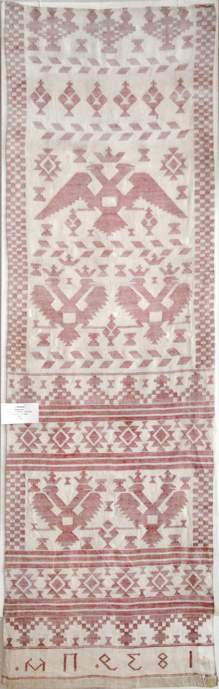
Рушник кролевецький тканий, обрядовий, 1839 рік (фрагмент)
Кролевець (Сумщина), переборне ткацтво, льон; на знімку етикетка музею: «рушник, фрагмент … 1839 рік». Знімок: Viktoriya Havrylenko, Wikimedia Commons.
Джерело: сторінка файлу · знімок: Viktoriya Havrylenko · права: CC BY-SA 4.0 · підпис на сторінці: «Рушник кролевецький тканий, обрядовий. 1839 рік»
Побачене
- Червоне тут не червоне: марена за майже двісті років стала сухою трояндою (#A97975–#B7928E) на небіленому полотні (#E2DAD2). Жодної плями суцільного кольору — крізь кожну фігуру просвічує біла основа, тож червоне лежить серпанком, а не заливкою.
- Верхні 55 % довжини майже порожні: у смугах між бордюрами червоного 1–8 % площі. Там стоять поодинокі фігури в один ряд — шість «вазонів» на ширину, двоголовий орел із короною — і між рядами багато полотна. Нижні 45 % густішають до 20–60 %: ряди зірок, потрійні стрічки, знов орли. Рушник читається як наростання, а не як рівний узір.
- Між ярусами не лінія, а «бігунець»: два ряди скошених ромбиків, зсунутих на півкроку, — око бачить скручений шнур. Суцільна потрійна стрічка з'являється лише в густій частині, ближче до кінця.
- З боків — стовпчик шашечки завширшки близько 9 % полотна з кожного боку; у густій частині його перебивають стрічки на всю ширину.
- Усі косі лінії — східці: найменша частинка узору — прямокутничок перебору, і з нього складено і крило орла, і корону, і цифру. Плавної кривої нема жодної.
- Унизу, на голій смузі між двома тонкими лініями, виткано рік і літери. На знімку вони читаються дзеркально: «1839 · П М» (або річ знято зі звороту, або ткаля набирала узір з вивороту). Цифри зроблено не так, як фігури: тонкою лінією в одну нитку, з ромбиками-крапками між групами. Смуга підпису вища за будь-який ярус узору — це найпорожніше місце в густій частині.
Виміри. Частка червоного по довжині виміряна на 40 смугах без бічних бордюрів (схема нижче). Межа рідкого й густого — на 55 % довжини знімка: до неї 1–14 %, після неї 18–62 %.
Скільки на рушнику 1839 року узору: згори майже порожньо, до кінця густішає. Смуг 40, згори вниз; довжина риски — частка узору в смузі.
Колір із пікселів
За чим упізнають. Прибрати порожнє поле й лишити самий густий кінець — вийде килимок; прибрати східці — вийде вишивка гладдю. Рушник тримається на трьох речах разом: довге біле, наростання до кінця, східчаста фігура.

Рушник кролевецький тканий, обрядовий, початок ХХ ст.
Кролевець (Сумщина), початок ХХ ст. Знімок: Viktoriya Havrylenko, Wikimedia Commons.
Джерело: сторінка файлу · знімок: Viktoriya Havrylenko · права: CC BY-SA 4.0 · підпис на сторінці: «Рушник кролевецький тканий, обрядовий. Початок ХХ ст.»
Побачене
- Верхня третина — три рядки на голому полотні: «колоски»-стрілки, що всі летять ліворуч, між ними рядок косих рисок. Рядок займає 30–40 % червоного, між рядками — нуль. Це найтихіша частина рушника, і саме вона опиняється посередині, коли його вішають.
- Далі одразу густо, 40–70 %: два «вазони» обабіч суцільного червоного стовпа, пачки з трьох-чотирьох стрічок, і між пачками — вузькі кольорові пояски.
- Тут уже фабричні барвники: до ясного червоного (#B20C0D) додано фіалковий, малиновий і оливковий — і вони потекли. Малинові плями на білому поруч із фігурами — не узір, а фарба, що розійшлась під час прання. Через сто років це найживіше місце речі.
- Головна фігура — дерево з червоною кроною і двома оливковими листками; обабіч нього стовпчики в клітинку. Листок і крона виткані «ялинкою»: видно напрям кожної нитки.
- У густому кінці між пачками червоних стрічок лежать пояски з трьох розеток — червоної, фіалкової й малинової; оливкові рисочки між ними — листя. Червоні стрічки не рівні: кожна має ледь зубчастий край від перебору.
Виміри. На знімку рядок стрілок заввишки близько 2 % довжини, проміжок між рядками — близько 6 %: порожнього втричі більше, ніж узору. Рідке : густе по довжині ≈ 1 : 2.
Рушник початку ХХ ст.: три рядки на порожньому, далі одразу густо. Смуг 40, згори вниз; довжина риски — частка узору в смузі.
Колір із пікселів
За чим упізнають. Три рядки стрілок на порожньому полотні: їх досить, щоб упізнати рушник, навіть коли густого кінця не видно.

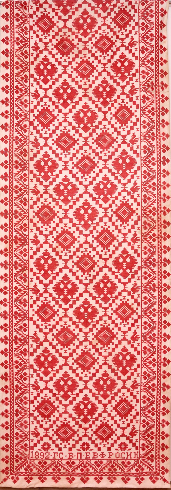
Настільник кролевецький тканий, обрядовий, 1892 рік
Кролевець (Сумщина), 1892. З колекції Музею кролевецького ткацтва, фото надала І. Пурига (за сторінкою джерела). Знімок: Viktoriya Havrylenko, Wikimedia Commons.
Джерело: сторінка файлу · знімок: Viktoriya Havrylenko · права: CC BY-SA 4.0 · підпис на сторінці: «Настільник кролевецький тканий, обрядовий, 1892 рік. З колекції Музею кролевецького ткацтва. Фото надала І.Пурига»
Побачене
- Протилежність рушникові: порожнього поля нема. Червоного рівно половина — 51–53 % у кожній смузі згори донизу. Око вже не знає, що фігура, а що тло: білі ромби на червоному чи червоні орли на білому.
- Сітка: ромби в шаховому порядку, у кожному другому — двоголовий орел, у решті — ромб із дрібною сіточкою всередині. Уздовж обох країв іде стовпчик маленьких птахів дзьобом до середини.
- Унизу, між узором і бордюром, виткано рядок: «1892 · ГС · В · П · Е · В ✚ РОСИХ» — рік, літери й хрест. Літери тієї ж східчастої будови, що й орли.
- Бордюр — зубці трикутниками назовні; за ним край полотна ще на палець білий.
Виміри. Частка червоного — 49–54 % у кожній із 20 смуг (схема нижче).
Настільник 1892 року: узору рівно половина по всій довжині. Смуг 20, згори вниз; довжина риски — частка узору в смузі.
Колір із пікселів
За чим упізнають. Рівні 50 на 50 і підпис із роком унизу. Це узір для столу, на який дивляться згори й зблизька; на стіні він рябить.

Рушники над іконою на покуті, меморіальний музей Пантелеймона Куліша «Ганнина Пустинь»
Мотронівка (Чернігівщина), експозиція музею. Знімок: Швітланьо, 2010, Wikimedia Commons.
Джерело: сторінка файлу · знімок: Швітланьо · права: CC BY-SA 3.0 · підпис на сторінці: «Panteleymon Kulish Museum Українська: Історико-меморіальний музей-заповідник «Ганнина Пустинь»»
Побачене
- Рушник висить не рівно: середина лягає на верх образа й ховається за ним, а два кінці розходяться донизу, як перевернута літера V. Найгустіший ярус опиняється на рівні очей людини, що сидить на лаві.
- Рушників три, один на одному: тканий кролевецький зверху, під ним білий вишитий із мереживним краєм. Видно сім кінців — і жодної середини.
- Порожнє поле, якого на розстеленому рушнику найбільше, на стіні зникає зовсім. Те, що в музейній вітрині — 55 % речі, у хаті — складка за іконою.
Колір із пікселів
За чим упізнають. Два кінці, що розходяться від однієї речі посередині. Обрамлюють не екран по колу, а одну річ — згори.
Вишитий рушник навколо ікони, Музей українського рушника (Переяслав)
автора знімка сторінка не називає, завантажено 2016. сторінка джерела. Права: CC BY-SA 3.0; лише посиланням, бо сторінка не називає автора.
_9.jpg){kind=link}
Вишитий рушник із червоними трояндами й чорним листям перекинуто через образ: середина біла й схована, кінці розходяться донизу й закінчуються густою смугою. За ним стіну вкрито тканими рушниками рівно, смугами, — і поруч із тим, що висить «живо», вони стають шпалерами.
Візуальний сенс
- Рушник красивий не узором, а тим, скільки довкола узору полотна. На взірці 1839 року понад половину довжини майже порожня; узір густішає лише до кінця. Усі попередні ескізи брали з рушника смугу орнаменту — тобто саме ту частину, якої в ньому найменше.
- Червоне старого рушника — припорошене, з білим усередині: марена на льоні (#A97975), а не #D00000. Ясне червоне — це вже фабрична нитка початку ХХ ст. Обидва справжні, але вони дають різний настрій: перше поруч із фото одягу мовчить, друге сперечається з червоною сукнею.
- Форма — східці. Перебір не вміє вести криву, тому і птах, і цифра, і вазон складені з прямокутничків. На екрані це переноситься без втрат: піксель і перебір — та сама сітка.
- Гине без матеріалу: серпанок (біла основа крізь червоне), патьоки барвника, нерівний край. Плоска заливка замість серпанку — і це вже наліпка.
Функціональний сенс для Люстерка
- Рушник живе у двох станах. Розстелений — довга річ із наростанням: тихий початок, густий кінець, унизу рік і літери. Повішений — складка посередині й два кінці обабіч однієї речі.
- Перше дає хід розмови з наростанням: що далі до образу, то густіше; кінець полотна — підпис із датою (як виткане «1839 · П М»), а не просто смуга. Зведення вже мало «кінець полотна» — взірець додає, що там стоять рік і ім'я.
- Друге дає спосіб показати одну річ: фото жінки чи образ тримає згори «перекинутий» рушник, кінці якого спускаються обабіч. Середини не видно — отже над фото нема нічого, крім складки.
- Три рядки стрілок на порожньому — готова форма для чекання збирання: рядок з'являється, між рядками порожньо, і всі стрілки летять в один бік.
Перенесення поруч зі взірцем
чекання, поки збирається образ
Чекання: три рядки на порожньому
зі взірця: Рушник кролевецький тканий, обрядовий, початок ХХ ст.
- Обводи стрілок і рисок зняті програмою зі знімка (сітка 88 клітин на ширину), колір — #B20C0D із того самого знімка, тло — колір його полотна.
- Порожнього між рядками втричі більше, ніж узору, — як на рушнику. Рядки з'являються по одному: збирання триває кілька хвилин, і кожен рядок — ще один переглянутий шар одягу.
- Чого бракує: на взірці рядків три, а кроків збирання буває більше; треба шукати на інших рушниках, які ще рядки стоять у порожньому полі.
одна річ під перекинутим рушником
Одна річ під перекинутим рушником
зі взірця: Рушники над іконою на покуті, меморіальний музей Пантелеймона Куліша «Ганнина Пустинь»; Рушник кролевецький тканий, обрядовий, початок ХХ ст.
- Так рушник висить на покуті в музеї Куліша: середина — складка над образом, два кінці розходяться обабіч. Обрамлено одну річ, а не екран.
- Працює для знайомства (фото жінки) і для готового образу. Поруч із фото одягу два червоні кінці — сильний сусід: з червоною чи картатою річчю вони сперечаються. Тому — лише в ті дві хвилини, коли на екрані одна головна річ, і вужчими, ніж тут.
- Чого бракує: вирізка зі знімка — не графіка продукту. Щоб це стало мовою, кінець треба перевести в обвід, як стрілки, і перевірити на справжніх фото з каталогу.
кінець полотна: густішає і підписується

Кінець полотна: густішає і підписується
зі взірця: Рушник кролевецький тканий, обрядовий, 1839 рік (фрагмент)
- Риски — виміряна частка узору в останніх 20 смугах рушника 1839 року, без округлення; колір — його вицвіла марена #A97975 на його ж полотні #E2DAD2.
- Підпис — обвід витканого «1839 · П М» з того самого знімка. У продукті на цьому місці стоять день, коли зібрано образ, і ім'я — збережений образ стає підписаною річчю, а не карткою в списку.
- Вицвілий колір поруч із фото одягу мовчить: це найтихіший із червоних, які знайшлись.
Чого не брати
- Суцільну смугу орнаменту вздовж краю екрана: у рушника так не буває, бордюр-шашечка йде лише вздовж густої частини.
- Чисте #FF0000 і заливку без просвітів.
- Двоголового орла: мотив чесний для Кролевця ХІХ ст., але сьогодні читається як чужий герб.
Сорочка: вишивка й мережка
оздоба там, де рука рухається; стан порожній
Що було в текстах. Fable: крій із прямокутників, уставка близько 25 см, оздоба на шві й на видноті. Claude: більшість вишивок — один-два кольори; решетилівське «білим по білому» — «рельєф і фактура замість кольору». Gemini й ChatGPT: мережка як шов завтовшки 1 px між частинами екрана.
Чого там не видно. Жодної сорочки. «Біле по білому» в показі стало блідим візерунком зірок на тлі; мережка — сірою лінією. Не видно, де саме на сорочці стоїть узір, скільки його і з чого складається «одна нитка».

Жіноча сорочка до підточки, Заставнівщина (Буковина), початок ХХ ст.
Чернівецька обл., Заставнівський р-н, початок ХХ ст.; виставка в Музеї Івана Гончара, Київ (за підписом сторінки). Знімок: Riwnodennyk, 2012, Wikimedia Commons.
Джерело: сторінка файлу · знімок: Riwnodennyk · права: CC BY-SA 3.0 · підпис на сторінці: «Жіноча сорочка до підточки. Поч. 20 ст. Чернівецька обл. Заставнівський р. Виставка в музеї Івана Гончара (Київ).»
Побачене
- Рукав — три поверхи. Вгорі уставка: дев'ять-десять чорних вовняних смуг упоперек, між ними вохристо-золоті. Вона щільна, як тканина в тканині, і займає третину рукава.
- Під нею одна вузька смуга зовсім іншого кольору — червоно-оранжева (#A21908) з чорним ламаним меандром і фіалковими цятками. Це «морщинка»: єдине місце, де сорочка дозволяє собі другий колір і найдрібніший узір.
- Нижче — поле: полотно, по якому розсипано квітки контуром (вохра, рожеве, зелене) і чорні «лапки», що йдуть косими рядами. Тут узору 3–14 % площі проти 65–80 % в уставці.
- Стан майже голий: дві вертикальні чорні лінії з окремих цяток уздовж розрізу пазухи, і все. Горловина зібрана на нитку з чорно-червоним зубчиком.
Виміри. Чорна нитка вздовж рукава, 30 смуг від плеча вниз: уставка 67–80 %, перехід 36–53 %, поле 3–14 %. Висоти трьох поверхів на знімку — 32 : 13 : 55.
Чорної нитки на рукаві: щільна уставка, перехід, рідке поле. Смуг 30, від плеча до манжета; довжина риски — частка узору в смузі.
Колір із пікселів
За чим упізнають. Щільне вгорі, одна яскрава смуга, рідке внизу. Якщо всі три поверхи зробити однаково густими — це вже хустка, а не рукав.

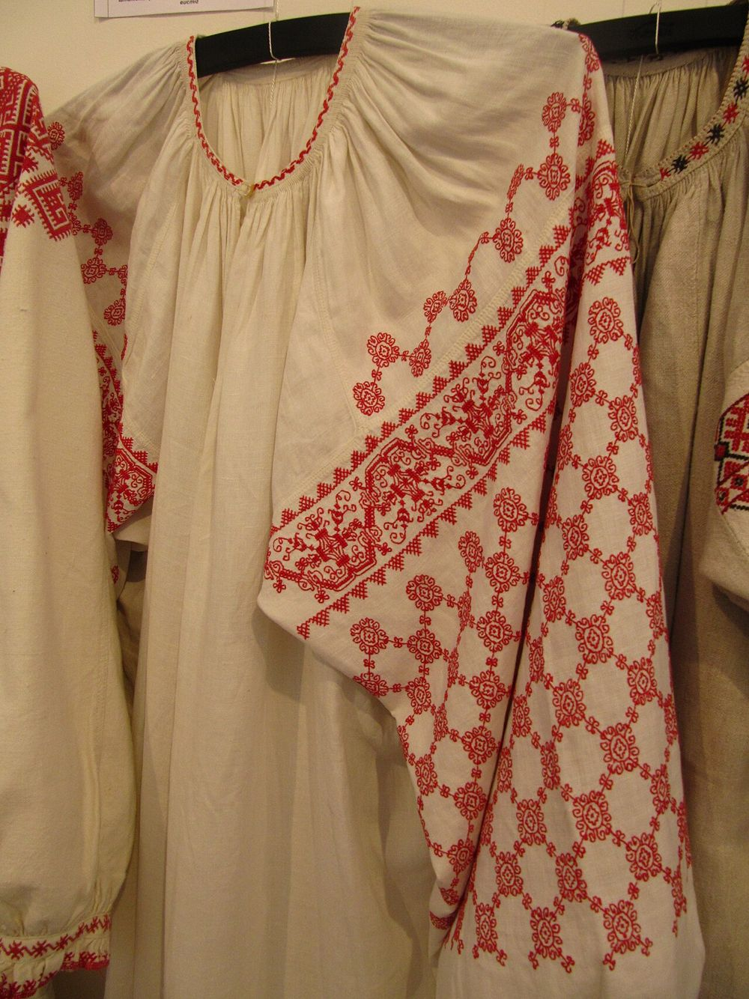
Жіноча додільна сорочка, с. Мельники (Черкащина), кінець ХІХ ст.
Черкаська обл., Чорнобаївський р-н, с. Мельники, кінець ХІХ ст.; виставка в Музеї Івана Гончара. Знімок: Riwnodennyk, 2012, Wikimedia Commons.
Джерело: сторінка файлу · знімок: Riwnodennyk · права: CC BY-SA 3.0 · підпис на сторінці: «Жіноча додільна сорочка. Кінець 19 ст. Черкаська обл. Чорнобаївський р. с. Мельники. Виставка в музеї Івана Гончара (Київ).»
Побачене
- Одна нитка — червона, і більше нічого. Тексти казали «червоне з чорним»; тут чорного нема зовсім.
- Поле рукава — не хрестик і не ромби, а сітка з кілець: кожне кільце — розетка з восьми закручених петельок довкола хвилястого осердя, між кільцями — пряма перемичка з маленьким бантиком посередині. Лінія округла, як писана пером.
- Сітка прозора: узором зайнято близько третини, решта — полотно. Через це рукав здалеку рожевіє, а зблизька — біле з червоним мереживом.
- Уставка — одна щільна смуга з «ріжками» між двома східчастими краями, пришита навскіс; від неї сітка починається без жодного переходу.
- Горловина — зборки під червоним зубчиком; манжета — така сама смужка. Стан порожній.
Колір із пікселів
За чим упізнають. Червона сітка-мереживо, крізь яку видно полотно. Густий червоний килимок на грудях — це вже фабрична «вишиванка».

Жіноча додільна сорочка, Гадяччина (Полтавщина), початок ХХ ст.
Полтавська обл., Гадяцький р-н, початок ХХ ст.; виставка в Музеї Івана Гончара. Знімок: Riwnodennyk, 2012, Wikimedia Commons.
Джерело: сторінка файлу · знімок: Riwnodennyk · права: CC BY-SA 3.0 · підпис на сторінці: «Жіноча додільна сорочка. Поч. 20 ст. Полтавська обл. Гадяцький р. Виставка в музеї Івана Гончара (Київ).»
Побачене
- Одна нитка — синювато-чорна (#261E19), хрестиком. На рукаві чергуються дві фігури в шаховому порядку: трилистник і зірчаста розетка.
- Вони зроблені по-різному. Розетка — суцільна, східчаста, чорна пляма. Листок трилистника — лише обвід, а всередині лишено полотно, «вікно». Через це поле не важке: чорного й білого в кожній парі порівну.
- Уставка — смуга з ромбів між двома зубчастими лініями; нижче половина рукава біла.
- Уздовж шва, що з'єднує рукав зі станом, іде тонка мережка — рядок дірочок, а не вишита лінія. Шов не сховано, а показано.
- При горлі — тонка обшивка червоним і чорним; це єдине червоне на всій сорочці.
Колір із пікселів
За чим упізнають. Чорне на небіленому, фігури окремо одна від одної, шов — рядок дірочок.

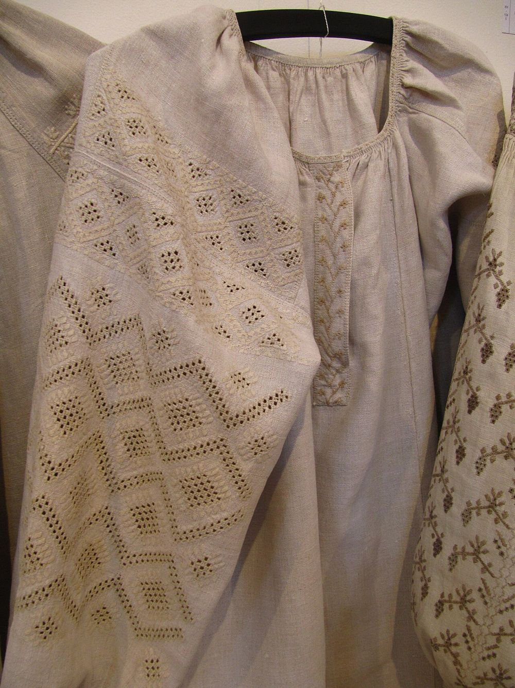
Жіноча сорочка, Миргородщина (Полтавщина), кінець ХІХ ст.
Полтавська обл., Миргородський р-н, кінець ХІХ ст.; виставка в Музеї Івана Гончара. Знімок: Riwnodennyk, 2012, Wikimedia Commons.
Джерело: сторінка файлу · знімок: Riwnodennyk · права: CC BY-SA 3.0 · підпис на сторінці: «Жіноча сорочка. Кінець 19 ст. Полтавська обл. Миргородський р. Виставка в музеї Івана Гончара (Київ).»
Побачене
- Те, що тексти називали «білим по білому», тут не біле: нитка лише трохи світліша й кремовіша за сіро-бежеве полотно. Узір видно не кольором, а тінню.
- Тінь дають дві речі: рельєф лиштви (настил лежить над полотном) і вирізані дірочки, зібрані в сітки, — крізь них темніє те, що під сорочкою.
- Рукав укрито весь, від уставки до манжета: щільна смуга, шов, далі великі ромби зиґзаґом. Стан голий; на пазусі — одна вишита гілочка вохристою ниткою.
Колір із пікселів
За чим упізнають. Узір, який зникає на рівному світлі й проступає на косому. На екрані світла збоку нема — тому блідий візерунок на тлі цього не передає.

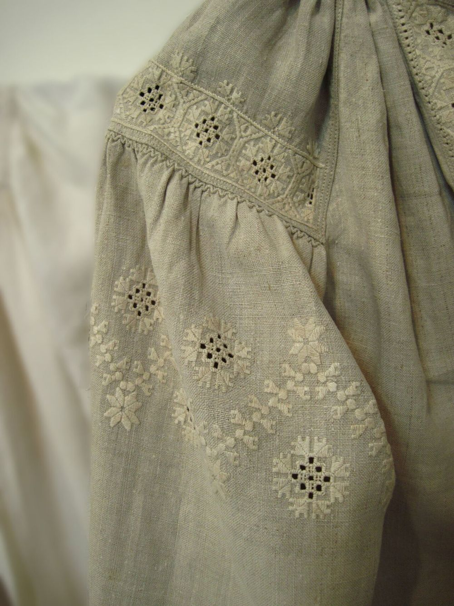
Жіноча сорочка, с. Суємці (Житомирщина), початок ХХ ст.
Житомирська обл., Баранівський р-н, с. Суємці, початок ХХ ст.; колекція Музею Івана Гончара, КН-19111 (за підписом сторінки). Знімок: Навка, 2012, Wikimedia Commons.
Джерело: сторінка файлу · знімок: Навка · права: CC BY-SA 3.0 · підпис на сторінці: «Жіноча сорочка з с. Суємці Баранівського району Житомирської області, поч. ХХ ст. Колекція Музею Івана Гончара, Київ (КН-19111). Сфотографовано на виставці "Українська вишиванка: традиції, стиль, свобода!"»
Побачене
- Тут нитка справді біліша за полотно: льон сірий, небілений (#8E886F), нитка — білена. Восьмикутні зірки лиштвою, у серці кожної — дев'ять дірочок 3×3.
- Уставка лежить між двома рядками мережки, під нею — дрібні зборки, «пухлики», притримані рядком зубчиків. Полотно зібране в об'єм: це шиття, а не малюнок.
- Видно кожну нитку полотна: воно грубе, з вузликами. Узір порахований по цих нитках — зірка рівна тому, що полотно є сіткою.
Колір із пікселів
За чим упізнають. Сіре полотно, біла зірка з темними дірочками. Саме звідси, а не з блідого тла, родом «фактура зірок».

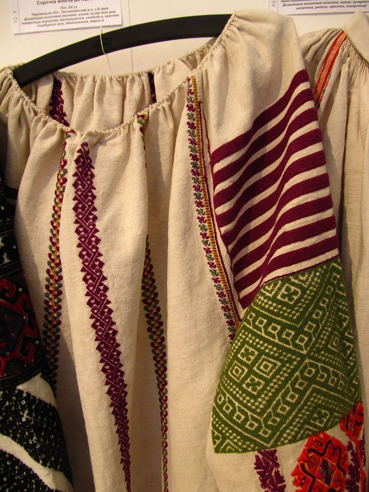
Жіноча сорочка до підточки, с. Брідок (Буковина), початок ХХ ст.
Чернівецька обл., Заставнівський р-н, с. Брідок, початок ХХ ст.; виставка в Музеї Івана Гончара. Знімок: Riwnodennyk, 2012, Wikimedia Commons.
Джерело: сторінка файлу · знімок: Riwnodennyk · права: CC BY-SA 3.0 · підпис на сторінці: «Жіноча сорочка до підточки. Початок 20 ст. Чернівецька обл. Заставнівський р. с. Брідок. Виставка в музеї Івана Гончара (Київ).»
Побачене
- Та сама будова, що в сусідньої сорочки із Заставнівщини, інші барви: уставка — дев'ять винно-бордових вовняних смуг із білими проміжками.
- Морщинка тут зелена — єдина зелена річ на всьому вбранні — з білим ламаним узором. Біле в ній не вишите: це полотно, яке лишили невкритим.
- На грудях — вертикальні винні зиґзаґи з тонкою жовто-зеленою жилкою.
Колір із пікселів
За чим упізнають. Морщинка іншого кольору, ніж уся сорочка. Це правило, а не випадок: у двох сорочок з одного району вона різна, а місце те саме.

Скатертина, близько 1860 (каталог: «Україна або Югославія»)
Art Institute of Chicago, 1985.95: льон, вирізування й мережка, хрестик бавовною; 212,9 × 165,8 см; походження музей подає з двома варіантами, майстриня невідома. Знімок музею, суспільне надбання.
Джерело: сторінка файлу · знімок: Art Institute of Chicago · права: CC0 (суспільне надбання, за позначкою музею) · підпис на сторінці: «Tablecloth, c. 1860. Ukraine or Yugoslavia. Linen, plain weave; cut and drawn work embroidered with cotton yarns in Vandyke stitch; and embroidered with cotton yarns in cross stitch. 212.9 × 165.8 cm. Gift of Frances Rooz. 1985.95»
Побачене
- Єдина річ серед розглянутих, де узір справді йде рамкою. Але рамка тут не лінія по краю: вона забирає близько чотирьох п'ятих скатертини, а порожня середина — лише п'яту частину (39 % ширини на 50 % довжини).
- Рамка тришарова: зовні ряд червоних «пуп'янків» вістрям назовні, далі широка смуга зиґзаґів із ромбами — червоне з блакитним, — і знову ряд пуп'янків, уже вістрям до середини. У чотирьох кутах — квадрати з іншим узором, що зупиняють смугу, а не дають їй повернути.
- Червоне на знімку малинове, холодне (#AC6674), і поруч блакитне: здалеку все зливається в бузкове. Знімок старий, із чорним тлом; барви можуть бути зсунуті.
- Середина порожня, бо там стоять миски. Рамка на речі є там, де річ накривають чимось зверху.
Виміри. Порожня середина — близько 20 % площі; смуга рамки з кожного боку — близько 30 % ширини скатертини.
Колір із пікселів
За чим упізнають. Кутові квадрати, що зупиняють бордюр. Рамка, яка ширша за те, що вона обрамлює.
Візуальний сенс
- Сорочка не прикрашена рівно. Узір зібрано там, де рука рухається й де його видно, — на рукаві; стан, найбільша площа, порожній. Краса в цьому розподілі: багато тихого полотна і одне густе місце.
- Рукав має три поверхи з різною густотою: щільна уставка, вузький перехід, рідке поле. На буковинській сорочці це 32 : 13 : 55 за висотою і 80 % → 40 % → 5 % за чорною ниткою.
- Одна сорочка — одна нитка: чорна, червона або біла. Розмаїття дає не колір, а будова фігури: суцільна пляма поруч з обводом із «вікном», сітка з кілець, дірочки.
- Другий колір дозволено в одному місці — у вузькій смузі під уставкою, і там він найяскравіший на всій речі.
- «Біле по білому» — це тінь, а не блідий колір: рельєф настилу й дірочки, крізь які темніє. Без косого світла й без об'єму його не існує, тому плоске світле тло з блідим візерунком — не воно.
Функціональний сенс для Люстерка
- Порожній стан — це місце для фото. Знімок жінки чи речі стоїть на голому тлі, а все, що оздоблене, винесено туди, де є дія: на край і на «рукав» — бічну смугу з тим, що можна зробити.
- Три поверхи рукава — готовий порядок для «що я зрозуміла»: щільно й коротко — головне (нагода), одна яскрава смуга — умова, на якій тримається образ, далі рідко й дрібно — усе інше. Жінка одразу бачить, що стилістка вважає головним, і може це виправити.
- Одна нитка — правило для екрана з образом: усі позначки на ньому одного кольору, а другий колір з'являється один раз — на тому, що вимагає її рішення (сумнів, заміна, «купити чи ні»). Це та сама морщинка.
- Шов-мережка — рядок дірочок там, де дві частини зшито. У продукті шов є між тим, що сказала жінка, і тим, що додала стилістка; показати його рядком дірочок чесніше, ніж сірою лінією.
Перенесення поруч зі взірцем
«що я зрозуміла»: три регістри рукава
«Що я зрозуміла» у три поверхи
зі взірця: Жіноча сорочка до підточки, Заставнівщина (Буковина), початок ХХ ст.
- Висоти блоків — 32 : 13 : 55, зняті з рукава; кольори — його чорна вовна, вохра й червоно-оранжева морщинка. Ліворуч — сам рукав для звірки.
- Щільний верх несе нагоду, морщинка — одну умову, якої не можна порушити, поле — решту дрібно й рідко, зі зсувом через один, як «лапки» на рукаві.
- Чого бракує: чорна смуга на третину картки поруч із фото одягу важка. Буковинські барви — найгучніші з усіх сорочок; ту саму будову треба пробувати в одній нитці, як на Гадяччині.
одна нитка на річ
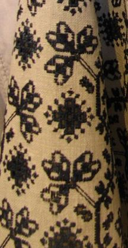
чорна · Гадяччиналисток — обвід із вікном, розетка — суцільна червона · Мельникисітка з кілець і перемичок, полотна дві третини
червона · Мельникисітка з кілець і перемичок, полотна дві третини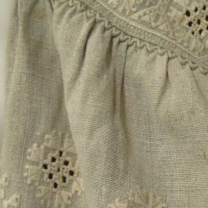
біла · Суємцізірка видна тінню й дірочкамиОдна нитка на річ
зі взірця: Жіноча додільна сорочка, Гадяччина (Полтавщина), початок ХХ ст.; Жіноча додільна сорочка, с. Мельники (Черкащина), кінець ХІХ ст.; Жіноча сорочка, с. Суємці (Житомирщина), початок ХХ ст.
- Три вирізки зі знімків без жодної домальовки. Чорна, червона й біла сорочки зроблені за одним правилом, а виглядають як три різні світи.
- У продукті нитка — це колір позначок одного образу. Її можна брати з палітри жінки: тоді «її» колір стає ниткою всіх її образів, а не кольором кнопки.
- Чого бракує: обводів. Сорочки на знімках висять зі складками, і програма не зніме з них рівну фігуру; потрібні знімки розстелених речей або схеми з альбомів узорів.
Чого не брати
- Блідий візерунок зірок на світлому тлі як «біле по білому»: на сорочці це тінь і дірочки, а не колір.
- Суцільну вишиту смугу на грудях чи довкола екрана: на старих сорочках стан порожній.
- Червоне разом із чорним як обов'язкову пару: з шести розглянутих сорочок такої пари нема на жодній.
- Тонку орнаментальну рамку довкола екрана: на єдиній речі з рамкою (скатертина) вона ширша за середину й стоїть там, де середину накривають посудом.
Плахта і стрій
шари, що заходять один на один, і пояс, який їх тримає
Що було в текстах. Fable (варіант «Стрій»): вбрання — комплекс шарів, кожен має місце й назву; образ — аркуш із постаттю й виносними підписами. Gemini й Fable: плахта — картата сітка, «шаховий порядок»; палітра як плахта — рядок основи й клітинки-пари; картка образу 60/40.
Чого там не видно. Ні плахти, ні вбраної постаті. З текстів плахта виходить шахівницею з рівних кольорових квадратів, а стрій — стосом смужок. Не видно, що шари перекриваються, чим вони різняться і що їх тримає разом.

Плахта з крайкою (на манекені, зі спини)
Підпис сторінки — лише «Плахта»; час, місцевість і збірку сторінка не називає — невідомо. Знімок: Софо (Sofo), 2015, Wikimedia Commons, суспільне надбання.
Джерело: сторінка файлу · знімок: Софо (Sofo) · права: Public domain · підпис на сторінці: «Плахта»
Побачене
- Це не шахівниця з кольорових квадратів. Тло одне — червоне, його більше половини (близько 55 % площі). Клітину робить не колір, а те, що в ній стоїть: малий ромб із чотирьох «очок» — рожевих, темно-синіх, жовтих — і під ним пара трикутників, зелених або білих.
- Барви живуть цятками. Рожевого, жовтого й білого разом — менше п'ятої частини; темного (синє, чорне, зелене) — стільки ж. Через це плахта здалеку червона, а зблизька строката.
- На ширину вміщається дев'ять клітин. Посередині — прямовисний шов: плахту зшито з двох полотнищ, і шов не сховано, а пройдено грубою червоною ниткою зиґзаґом. Узір обабіч шва не збігається на півклітини.
- Верхня п'ята частина, під поясом, іншого кольору — рожево-оранжева, тканина тонша. Її ховає пояс, і вона на це й розрахована.
- Пояс — широка червона вовняна крайка, обгорнута довкола стану в кілька витків; кінці з китицями звисають обабіч нижче стегон. Він рівний, без узору, і це найбільша одноколірна пляма в усьому вбранні.
- Знизу з-під плахти визирає біла смужка подолу сорочки з дірчастим узором — на два пальці.
Виміри. Клітин на ширину — 9. Кольори плахти з пікселів: червоне тло ≈ 55 %, темне ≈ 19–27 % (з тінями складок), світле (рожеве, жовте, біле) ≈ 18 %.
Колір із пікселів
За чим упізнають. Спільне червоне тло, дрібні ромби в клітинах, шов посередині. Рівні кольорові квадрати — це скатертина в клітинку.

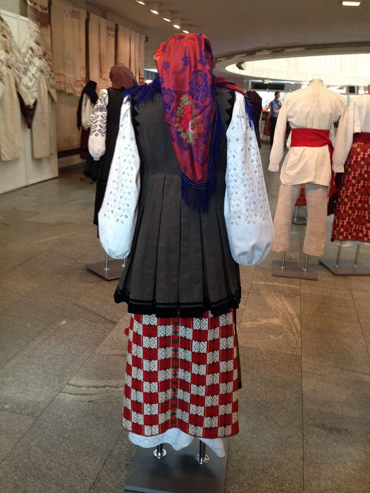
Полтавський стрій (на манекені, зі спини)
Підпис сторінки — «Полтавський стрій»; час і збірку сторінка не називає — невідомо. Знімок: Софо (Sofo), 2015, Wikimedia Commons, суспільне надбання.
Джерело: сторінка файлу · знімок: софо (Sofo) · права: Public domain · підпис на сторінці: «Полтавський стрій»
Побачене
- Шари не лежать стосом — вони заходять один на один. Хустка спадає з голови на третину спини поверх керсетки; керсетка накриває верх плахти; з-під плахти визирає сорочка. Кожен шар видно лише частково, і саме з цих частин складається постать.
- У кожного шару свій матеріал і свій голос: хустка — блискучий шовк, фіалкове з червоним і торочками; керсетка — матова темно-сіра вовна (#2F2B2E), зовсім без узору; плахта — щільна вовна в червоно-білу клітку; рукави — біле полотно з дірчастим шиттям. Блискуче, матове, строкате й прозоре не повторюються.
- Керсетка від талії розходиться віялом із семи-дев'яти складок («вуса») і закінчується чорною оксамитовою смугою із зубцями. Це єдиний шар, у якого форма важить більше за барву.
- Тут плахта інша, ніж на сусідньому взірці: справді шахівниця, але біла клітина не порожня — у ній дрібний червоний узір. Шість клітин на ширину.
- Найтихіший шар — найбільший (керсетка, половина постаті). Найяскравіший — найменший і найвищий (хустка).
Виміри. Від маківки до подолу: хустка 0–38 %, керсетка 13–65 %, плахта 65–94 %, поділ сорочки 94–100 %. Рукави сорочки — обабіч на всю висоту керсетки.
Колір із пікселів
За чим упізнають. Силует зі спини: дзвін керсетки, під ним вузька строката смуга, зверху пляма хустки. Упізнається без жодного орнаменту.

Жіночий костюм, Городенківщина (Покуття), кінець ХІХ – початок ХХ ст.
Івано-Франківська обл., Городенківський р-н; виставка в Музеї Івана Гончара (за підписом сторінки). Знімок: Riwnodennyk, 2012, Wikimedia Commons.
Джерело: сторінка файлу · знімок: Riwnodennyk · права: CC BY-SA 3.0 · підпис на сторінці: «Костюм жіночий. Кінець 19 ст. - початок 20 ст. Івано-Франківська обл. Городенківський р. Виставка в музеї Івана Гончара (Київ).»
Побачене
- Вишивка тут — об'єм: темно-вишнева вовна «кучерявим» швом, шорстка, як смушок. Уставка — суцільна темна смуга, далі рукав у шаховому порядку темних круглих «ґудзів» на білому, пів на пів.
- Пазуха — вузька прямовисна планка з дрібним оранжево-жовтим і фіалковим хрестиком, на ній три червоні кутасики, один під одним. Єдине дрібне й світле місце на всьому вбранні.
- Пояс — тканий, червоний, у тонку клітинку, з кінцем, що звисає спереду; під ним обгортка в темні поперечні смуги з оранжевими й зеленими рисками. Смуги обгортки лежать упоперек, клітинка пояса — дрібніша за них.
Колір із пікселів
За чим упізнають. Великий темний узір на рукаві проти дрібного світлого на грудях; пояс як межа між верхом і низом.

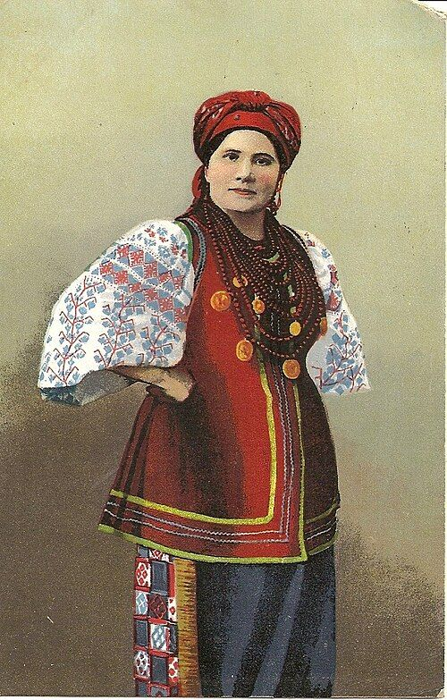
Листівка «Український стрій», 1917
Кольорова листівка 1917 року (за підписом сторінки: «Колюшки 1917»); хто на знімку й де знято — невідомо. Скан: Gabi Gofmann, Wikimedia Commons.
Джерело: сторінка файлу · знімок: Gabi Gofmann · права: CC BY-SA 3.0 · підпис на сторінці: «Український стрій: Почтівка.Український стрій.Колюшки 1917.»
Побачене
- Те, як стрій хотіли показати сто років тому: жінка стоїть упівоберта, рука в бік — щоб було видно рукав. Рукав білий із синьо-червоними гілками, і він займає більше місця, ніж обличчя.
- Намисто — не одна нитка, а десяток разків, що вкривають груди від шиї до пояса, з трьома золотими дукачами. Це найщільніше місце постаті.
- Керсетка червона, по краю — подвійна жовто-зелена облямівка, що обводить увесь силует тонкою лінією. З-під неї — смужка плахти в синьо-біло-червону клітку на долоню завширшки.
- Фарби листівки накладено поверх фотографії: вони рівні й яскравіші за справжні. Це вже показ строю, а не стрій.
Колір із пікселів
За чим упізнають. Розфарбована листівка — перший крок до сценічного костюма: всі барви однаково гучні.
Візуальний сенс
- Стрій гарний перекриттям: кожну річ видно частково, і частина каже про ціле. Двох пальців білого подолу досить, щоб знати, що під плахтою сорочка.
- Шари різняться матеріалом, а не лише барвою: блискуче, матове, строкате, прозоре. Найбільший шар — найтихіший, найменший — найяскравіший.
- Плахта — спільне тло, по якому барви розсипано цятками. Вона строката й цілісна водночас, бо червоного більше половини.
- Пояс — рівна одноколірна смуга між строкатим і білим. Він ділить постать і тримає вбрання; його кінці звисають.
- Гине, коли всі шари роблять однаково яскравими й рівними — як на розфарбованій листівці 1917 року.
Функціональний сенс для Люстерка
- Образ із речей каталогу — це шари, що перекриваються. Не колонка карток однакового розміру, а постать, де жакет закриває половину сукні, а взуття «визирає». Розмір плями відповідає тому, скільки речі видно на людині; тексти про «Стрій» мали шари, але рівними смужками.
- «Визирає» — окрема роль: річ, якої видно на два пальці (поділ, комір, манжет), але без якої образ інший. У продукті це місце для дрібниці, яку стилістка додала свідомо.
- Пояс — те, що тримає образ: нагода. Одна рівна смуга через усю постать із назвою нагоди, а її кінці — дві дії: «вдягну» і «не те».
- Плахта як палітра: тло — основна барва жінки, цятки — ті, що їй до лиця в малій кількості. Видно одразу не лише які барви, а й скільки кожної.
Перенесення поруч зі взірцем
образ як стрій: шари заходять один на один

Образ як стрій
зі взірця: Полтавський стрій (на манекені, зі спини)
- Висоти й перекриття шарів зняті з постаті на знімку; кольори — з її керсетки, хустки, плахти й сорочки.
- Найбільший блок — найтихіший, яскравий — малий і вгорі; унизу смужка «визирає». На такій схемі одразу видно, яку річ замінюють і що вона закриває.
- Чого бракує: у каталозі речі — це фото на білому тлі, а не шари тканини. Треба пробувати зі справжніми знімками: чи тримається перекриття, коли замість кольорових плям стоять фотографії.
палітра: барва живе цяткою на спільному тлі

Палітра-плахта
зі взірця: Плахта з крайкою (на манекені, зі спини)
- Будова клітини — з вирізки ліворуч: спільне червоне тло, ромб посередині, знизу пара трикутників. Кольори — з пікселів тієї самої плахти.
- Жінка бачить свої барви не рівними зразками, а так, як їх носять: одна основна, решта — цятками.
- Чого бракує: ромб і трикутники тут складено з прямокутників CSS за вирізкою, а не знято обводом — складки на знімку не дають рівної фігури. Потрібен знімок розстеленої плахти з музейної збірки.
Чого не брати
- Шахівницю з рівних кольорових квадратів під назвою «плахта».
- Шари однакової висоти стосом: на постаті вони перекриваються, і найбільший — найтихіший.
- Рівну яскравість усього — це мова листівки й сцени.
Витинанка
один колір, один згин — і дві половини; висить, і крізь неї видно
Що було в текстах. Усі чотири роботи згадують витинанку: «ажурні вирізанки з середини ХІХ ст.», «негативний простір в одному кольорі». У показі була змінна `--витинанка` — силует вазона, який потім прибрали; у варіанті Fable — «постать-витинанка» на знайомстві; у Claude — вибір пари «зі згину».
Чого там не видно. Жодної витинанки: ні старої, ні сучасної.
Не знайдено. Старої витинанки (Поділля, Подніпров'я кінця ХІХ — початку ХХ ст.) з музейним описом і вільними правами не знайшла: на Wikimedia Commons у категорії лише сучасні роботи; статтю Зінаїди Косицької про подільські витинанки з «Чтива» відкрити не вдалось (сайт віддав сторінку-заглушку). Тому висновки — про сучасну авторську витинанку, не про давню хатню.

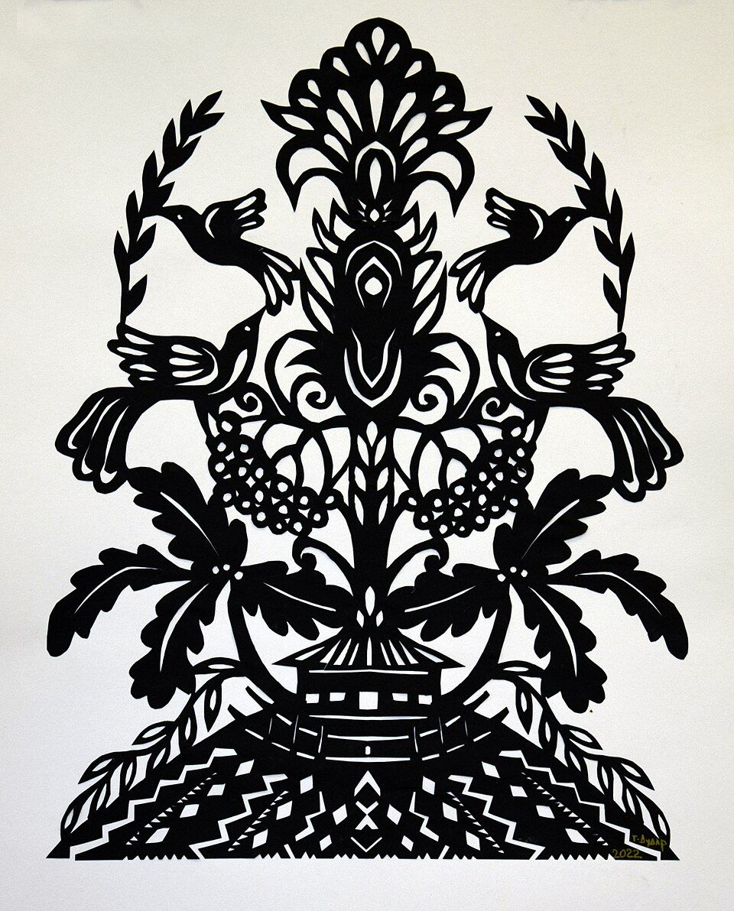
Галина Дудар. «Оберіг рідного дому», витинанка
Папір, вирізування. Знімок і твір виклала сама авторка: Wikimedia Commons, CC BY-SA 4.0, 22.05.2023. У кутку аркуша підпис і рік — 2022. Розміру сторінка не називає — невідомо.
Джерело: сторінка файлу · знімок: Галина Дудар (авторка витинанки й знімка) · права: CC BY-SA 4.0 · підпис на сторінці: «Галина Дудар. «Оберіг рідного дому»»
Побачене
- Один чорний аркуш на білому, і в ньому все тримається за все: дерево росте з хати, на гілках сидять птахи, від птахів ідуть вінки з листя. Жодна частина не лежить окремо — перемички й є малюнок.
- Аркуш дзеркальний відносно стовбура: птахи — парами, обличчям до дерева й від нього, по чотири з кожного боку. Це знову двоє обабіч дерева — як на колтах і на кахлі з оленями, тільки тут пару дає згин паперу, а не задум.
- Вага зростає донизу: вгорі, у кроні, чорного менше десятої частини, внизу, де пагорб із зиґзаґами й хата, — три чверті. Річ стоїть, як рослина: легка верхівка, важкий корінь. У книзі навпаки — важке вгорі.
- Дрібне зроблено білим у чорному: око птаха, прожилки листка, вікна хати — це дірочки. Велике — чорним у білому. Лінії як такої нема, є лише край.
- Підпис і рік у нижньому правому куті написано золотистим — єдине, що порушує симетрію й колір.
Виміри. Чорного в межах фігури ≈ 47 %. Густота чорного згори вниз, двадцятими частинами: 8, 21, 31, 28, 39, 44, 29, 39, 55, 56, 50, 59, 47, 73, 58, 52, 47, 64, 69, 75 %. Половини збігаються піксель у піксель на 78 % (знімок трохи перекошений, край ножиць нерівний).
Частка чорного по висоті: витинанка важчає донизу Смуг 20, згори вниз; довжина риски — частка узору в смузі.
Колір із пікселів
За чим упізнають. Суцільний чорний силует, у якому все з'єднано, і точна дзеркальність. Розрізати перемички — стане набором значків.
Майстерня витинанки: матеріал Ukraїner «Витинанка. Паперове мереживо»
Ukraїner; майстрині, названі в матеріалі, 2019. сторінка джерела · зображення. Права: знімок із людиною, права Ukraїner — лише посиланням.

Майстриня сидить за столом, а за нею на стіні — три витинанки, і всі різні за родом. Довга біла висить згори донизу, як фіранка чи рушник, на всю висоту стіни: витинанка тут — завіса, а не картинка в рамці. Поруч чорна — три жіночі обличчя, вирізані одним аркушем: постаті тримаються одна за одну перемичками, бо інакше папір розпався б. Третя — помаранчева, мала. Кожна — одного кольору, і колір стіни видно крізь прорізи: другий колір дає не папір, а те, на чому він висить.
Візуальний сенс
- Витинанку впізнають за суцільністю: один колір, один аркуш, усе тримається перемичками, і все дзеркальне. Це найграфічніша річ в альбомі — вона вже майже знак.
- Другий колір дає не папір, а те, що за ним: на знімку майстерні крізь прорізи видно стіну. На екрані це переноситься прямо — силует, крізь який видно фото чи тло.
- Межа сувеніра близько: дерево, птахи й хата — саме той набір, який друкують на листівках. Тримає лише рука авторки; намальований «під витинанку» вазон у нашому показі прибрали недарма.
Функціональний сенс для Люстерка
- Сумнів і заміна речі. Витинанку ріжуть зі згину: один рух ножиць дає дві дзеркальні половини. Це четверта дзеркальна пара в альбомі після колтів, кахлі з оленями й літер Нарбута.
- Чекання збирання. Папір розгортають — і з малого складеного клаптя виходить велике. Розгортання як рух чекання чесніше за крутилку, та без справжньої витинанки його нема з чого зробити.
Чого не брати
- Вазон, дерево життя й півників силуетом «під витинанку».
- Зубчастий край картки як «вирізаний»: край витинанки — наслідок малюнка, а не оздоба прямокутника.
- Саму роботу Галини Дудар чи її частини в продукті: ліцензія дозволяє показати її тут із підписом, та це авторський твір, а не народний узір.
Скриня, сволок і хата
лице розписане, нутро — голе дерево; посередині — дата
Що було в текстах. Fable збудував варіант «Скриня»: святкове, щоденне, прискринок із прикрасами, «заведімо скриню» на знайомстві. Gemini взяв від хати сволок — темну несучу шапку екрана (`--сволок-дуб` #1C1917). Ні скрині, ні сволока не показано.
Чого там не видно. Якого кольору скриня, що на ній намальовано, як поділено лице і де на ній дата.
Не знайдено. Мисника й жердки зблизька не знайшла. Сволок сотника Яковенка 1741 року (Диканський музей) і сволок 1901 року з хрестом — лише посиланням: умови сайта «Музейний фонд України» вільної ліцензії не називають. Колір `--сволок-дуб` #1C1917 Gemini на жодному з чотирьох сволоків не трапився: старе дерево на знімках буре (#4E3E2B, #776352), а не чорне. Прискринка (малої шухляди всередині скрині) на знімках не видно.

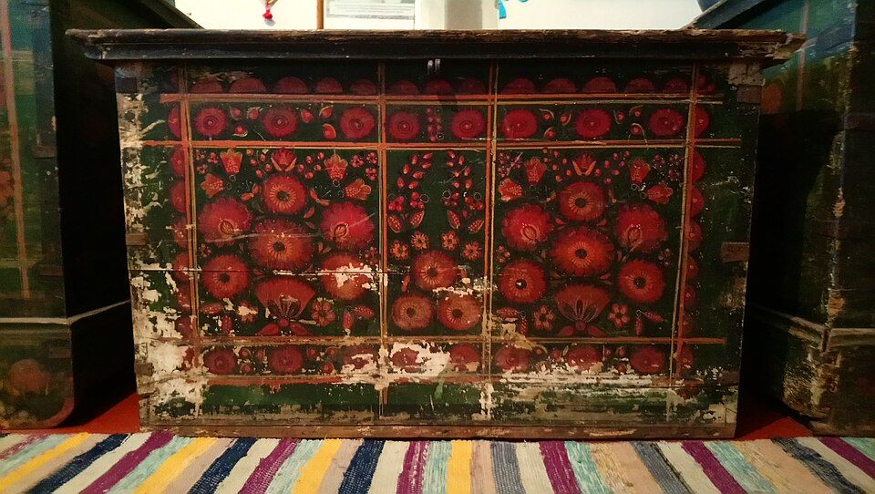
Весільна скриня, мальована
Знімок: Олександр Бондаренко28, 18.07.2019, Wikimedia Commons, CC BY-SA 4.0. Осередок, час і музей сторінка не називає — невідомо.
Джерело: сторінка файлу · знімок: Олександр Бондаренко28 · права: CC BY-SA 4.0 · підпис на сторінці: «Весільна скриня»
Побачене
- Скриня темно-зелена, майже чорна. Лице поділено тонкими помаранчевими лініями на три поля: широке, вузьке, широке. Лінії — єдине пряме на ній.
- Поля забито великими червоними квітами впритул — круглими, з темним осередком, як маківки зверху. Порожнього тла всередині полів майже нема: це найгустіший розпис в альбомі, повна протилежність рушникові.
- По верхньому краю — ряд червоних півкіл, наче квіти вилазять з-під віка.
- Знизу фарба стерта до білого ґрунту й дерева — там, де скриню совали й зачіпали ногами. Видно, що її вживали, і стерте місце каже про це більше, ніж розпис.
- Віко рівне, виступає над стінками; скриня стоїть на смугастому тканому доріжнику — жовте, бузкове, синє, біле.
Виміри. Поля лиця: 39 : 22 : 39 (широке — вузьке — широке), обабіч — береги по ≈ 1/9 ширини.
Колір із пікселів
За чим упізнають. Темна скриня з трьома полями червоних квітів і стертим низом.

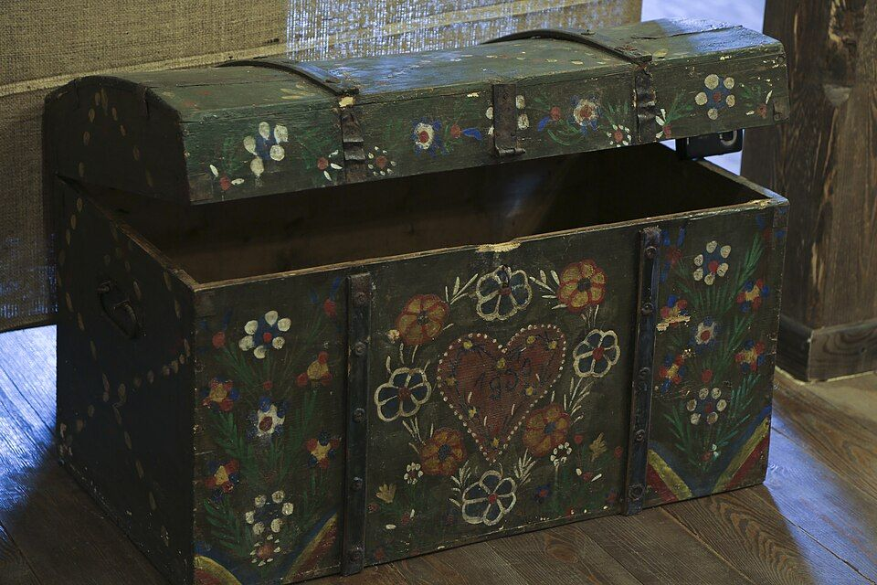
Весільна скриня, Центральна Україна, 1930
Збірка замку Радомисль. Знімок: Юрий Рудницкий, 18.06.2013, Wikimedia Commons, CC BY-SA 3.0. Майстер невідомий.
Джерело: сторінка файлу · знімок: Юрий Рудницкий · права: CC BY-SA 3.0 · підпис на сторінці: «The wedding chest. Central Ukraine, 1930. From the Collection of Radomysl Castle (Ukraine)»
Побачене
- Віко опукле й відчинене — і видно головне: зовні скриня вся розписана, всередині — голе дерево без жодної лінії. Краса назовні, добро всередині.
- Посередині лиця — серце, обведене крапками, і в ньому рік. Довкола — п'ятипелюсткові квітки білим, синім, жовтогарячим, рідко, з повітрям. Дата — центр усього розпису.
- Залізні штаби ділять лице на три частини й водночас тримають скриню; на розі збоку — кована ручка. Оздоба й конструкція — те саме залізо.
- У нижніх кутах — кольорові смуги кутником, єдина геометрія серед квітів.
- Розпис грубший і рідший, ніж на першій скрині: квітка — п'ять мазків і крапка.
Виміри. Пропорцій лиця не міряла: скриню знято з кута.
Колір із пікселів
За чим упізнають. Серце з роком посеред лиця.

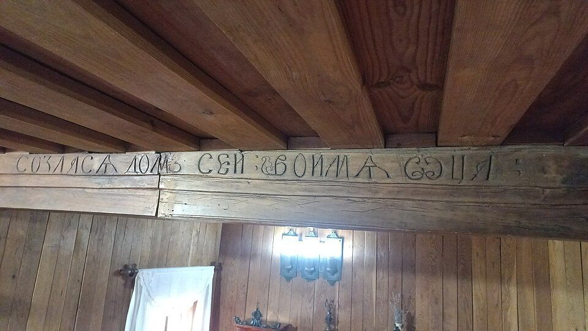
Сволок із різьбленим написом, хата в Полтаві
Знімок: Berser25, 5.05.2024, Wikimedia Commons, CC BY-SA 4.0. Опис сторінки: «Хата, Полтава, Соборний майдан, 3». Року сволока й майстра сторінка не називає — невідомо.
Джерело: сторінка файлу · знімок: Berser25 · права: CC BY-SA 4.0 · підпис на сторінці: «Хата, Полтава , Соборний м-н , 3»
Побачене
- Уздовж усієї балки вирізано один рядок: «СОЗДАСѦ ДОМЪ СЕЙ ВО ИМѦ ОТЦА…» — далі за край кадру. Це не оздоба з літер, а речення: хата підписана тим, хто її поставив, і це перше, що бачать, підвівши очі.
- Літери врізані, не накладені: дно літери темніше за площину, тож напис читається тінню, а не фарбою. Заввишки вони десь третину бруса й тримаються верхнього краю; нижні дві третини дерева гладкі.
- Рука нерівна: проміжки між словами різні, літера «Ѧ» ширша за сусідні, рядок ледь гуляє. Видно, що різали від руки, з одного заходу.
- Сволок темно-бурий і матовий; стеля над ним світліша. Він — єдина темна смуга в білій хаті, і вона лежить упоперек, над головою.
Виміри. Напис — ≈ 1/3 висоти бруса, при верхньому краї; один рядок на всю довжину, без рамки.
Колір із пікселів
За чим упізнають. Один різьблений рядок на всю довжину темної балки над головою.

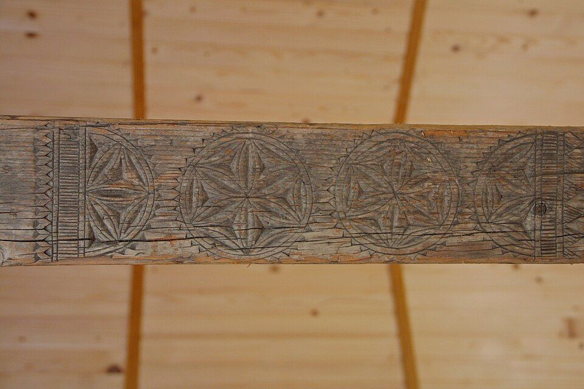
Сволок із гуцульської хати, Криворівня
Знімок: Ivan Mamay, 29.07.2018, Wikimedia Commons, CC BY-SA 4.0. Опис сторінки: Івано-Франківська область, Верховинський район, с. Криворівня. Року сволока сторінка не називає — невідомо.
Джерело: сторінка файлу · знімок: Ivan Mamay · права: CC BY-SA 4.0 · підпис на сторінці: «Україна, Івано-Франківська область, Верховинський район, с. Криворіня»
Побачене
- Старий темний сволок покладено під нову соснову стелю: два дерева — два віки, і видно це без підпису. Нове жовте й гладке, старе буре, зі слідами сокири.
- На лиці три кола, у кожному шестипелюсткова розета, вибрана тригранною різьбою: пелюстка — дві похилі грані, що сходяться в ребро. Малюнок робить не лінія, а тінь у виїмці.
- Розети стоять рідко — між ними гладке дерево завширшки як сама розета; на кінцях балки — смуги дрібних зубців. Оздоба зайняла заледве п'яту частину довжини.
- Жодної фарби. Це той самий хід, що й «біле по білому» на сорочці: узор з того самого матеріалу, видимий лише за косого світла.
Виміри. Три розети на видимій довжині; розета ≈ висота бруса; між ними гладке поле ≈ 1 розета.
Колір із пікселів
За чим упізнають. Три різьблені кола-розети на темній балці, решта дерева гладка.

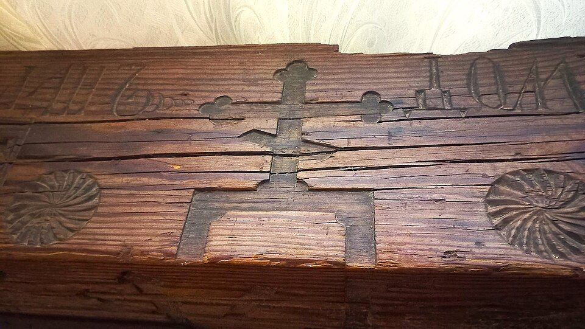
Фрагмент сволока з хрестом і розетами, Переяслав
Знімок: Berser25, 24.09.2023, Wikimedia Commons, CC BY-SA 4.0. Музей народної архітектури та побуту в Переяславі. Села й року сторінка не називає — невідомо (на дереві видно цифри, та певно прочитати їх не можу).
Джерело: сторінка файлу · знімок: Berser25 · права: CC BY-SA 4.0 · підпис на сторінці: «Фрагмент сволока у Музеї народного побуту Переяслав 2023 рік»
Побачене
- Посередині — хрест на східчастій основі (три сходинки); обабіч нього дзеркально дві вихорові розети — кола, в яких пелюстки закручені в один бік.
- Над хрестом — цифри року й літери. Отже, сволок несе те саме, що й скриня: дату, коли «заведено», і знак посередині.
- Будова — та сама дзеркальна пара, що в колтах і на кахлі Кошака: вісь посередині, двоє однакових обабіч. Тут вона стоїть на головній балці хати.
- Різьба мілка, контурна, краї вищерблені; фарби нема.
Виміри. Хрест — на осі; розети — по одній з кожного боку на відстані ≈ 1,5 висоти бруса.
За чим упізнають. Хрест на сходинках між двома вихоровими колами, над ним рік.

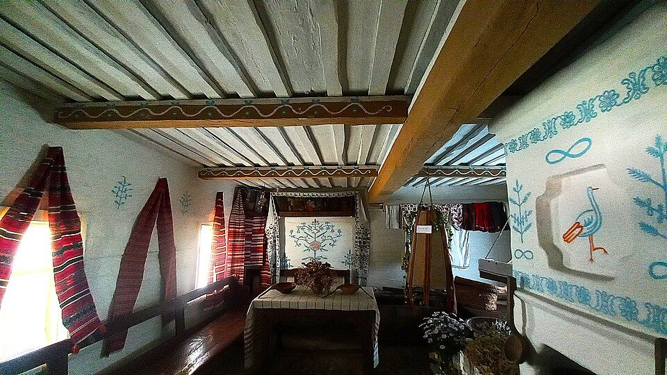
Поліська хата: мальовані сволоки, стіни й рушники, Переяслав
Знімок: Berser25, 24.09.2023, Wikimedia Commons, CC BY-SA 4.0. Опис сторінки: «Сволоки у поліській хаті Переяслав 2023 рік». Села, звідки хата, сторінка не називає — невідомо.
Джерело: сторінка файлу · знімок: Berser25 · права: CC BY-SA 4.0 · підпис на сторінці: «Сволоки у поліській хаті Переяслав 2023 рік»
Побачене
- Сволоків два, і вони не різьблені, а мальовані: по вохристому дереву біла хвиля з синіми цятками. Стеля з білених дощок, тож балки — дві теплі смуги на білому.
- Стіни білі, і розпис на них рідкий: сині деревця, знак, схожий на «безконечник», у ніші — лелека з червоними ногами. Кожен малюнок стоїть окремо, довкола нього порожня стіна.
- Рушники висять кутом — перекинуті через кілок над вікном так, що два кінці розходяться донизу. Червоно-чорні кінці — найгустіше, що є в хаті, і вони вгорі, над вікнами й образами.
- Нижче пояса хата спокійна: стіл під небіленим полотном, лава, долівка. Усе барвисте підняте вище очей — так само, як оздоба на земстві Кричевського.
- Барв три: біла стіна, синій і червоний; дерево — четверте. Зеленого й жовтого нема.
Виміри. Барвисте — у верхній третині стіни й на стелі; нижні дві третини — біле, полотно й дерево.
Колір із пікселів
За чим упізнають. Біла хата, де все барвисте — рушники, образи, розпис — зібрано вгорі.
Сволок сотника Федора Яковенка, 1741
майстер невідомий, 1741. сторінка джерела. Права: Диканський історико-краєзнавчий музей ім. Д. М. Гармаша; «Музейний фонд України» вільної ліцензії не називає — лише посиланням.
Липа, рельєфне різьблення; 22,5 × 29 × 387 см. Чотиригранна балка майже чотири метри завдовжки, суцільно вкрита різьбою: напис іде рядком при верхньому краї, під ним — аркади з півкіл і зубчасті смуги, посередині коло. За описом музею на ньому чотири речення: «Сей дом Отец создал, сей дом Сын утвердил, сей дом Дух святый обновы», хто збудував («коштом благородного господина Федора Яковенка сотника»), коли («Року от Рождества Христова 1741-го месяца июня 1-го числа») і побажання («Сему дому благоестно житы…»). Тобто сволок — це титульний аркуш хати: формула, власник, дата, побажання, саме в такому порядку. Знімок дрібний (балка на всю ширину кадру), літер на ньому не прочитати.
Сволок із хрестом і роком «1901», фрагмент
майстер невідомий, 1901. сторінка джерела. Права: Диканський історико-краєзнавчий музей; вільної ліцензії не названо — лише посиланням.
Брус, фарбований у буре, висить на двох ланцюгах. Посередині — чорний хрест на підніжжі, обабіч нього навскіс дві тонкі різьблені лінії (музей називає їх посохом і списом), далі рік. Хрест не різьблений, а намальований чорним і обведений різцем — найпростіший із бачених сволоків, і будова та сама: знак на осі, пара обабіч, дата.
Хата з села Яснозір'я на Черкащині (Пирогів): піч, скриня, рушник над образами
знімок: Сарапулов, 2014. сторінка джерела. Права: CC BY-SA 4.0; у альбом не покладено, бо того самого вже досить на знімку поліської хати.

Біла піч займає чверть хати й зовсім гола; скриня стоїть під стіною; рушник перекинуто над образами в куті. Сволок темний, гладкий. Те саме правило: стіни й піч білі, барвисте — вгорі в куті.
Візуальний сенс
- Скриня — темна й густа; вона красива як одна важка річ у світлій хаті. На світлому екрані поруч із фото одягу це знову одна темна пляма, не тло.
- Найживіше на ній — не квіти, а стертий низ і рік у серці: сліди часу й власниці. Розпис без цього — петриківський сувенір.
- Сволок — єдина темна смуга в білій хаті, і на ньому стоїть письмо: хто поставив, коли і з яким побажанням. Чотири бачені сволоки збудовані однаково: рядок при верхньому краї або знак на осі з парою обабіч; решта дерева гладка.
- Хата загалом — це біла стіна, на якій барвисте зібрано вище очей (рушники, образи, розпис, сволок), а нижче — полотно й дерево. Це вже третій взірець того самого розподілу після рушника й земства.
Функціональний сенс для Люстерка
- Збережені образи. Скриню відчиняють. Зовні — три поля й дата, всередині — саме добро, без оздоби. Добірка образів може мати «лице» (що в мене є, коли заведено) і просте нутро, де вже нічого не прикрашено.
- Знайомство. Скриню заводили один раз і ставили на ній рік. День, коли жінка вперше прийшла, — її дата на скрині; це єдине місце, де в продукті доречне число-оздоба.
- Купити чи ні. До скрині докладали. Річ, яку жінка вирішила купити, — та, що лягає до вже наявних; три поля лиця можна читати як «маю — думаю — докупила», та це вже здогад, а не побачене.
- Верхня смуга продукту. Сволок підказує, де стояти назві й рядку «чия це шафа, відколи»: одна темна тиха смуга вгорі з одним рядком, а не шапка з кнопками. У «Збережених образах» — дата, коли образ «заведено», стоїть на осі, як рік на сволоку й на скрині.
- Перший екран. Формула сволока сотника Яковенка — «хто, коли, з яким побажанням» — готовий порядок для знайомства: ім'я жінки, день, коли почали, і одне побажання від стилістки. Три короткі рядки замість анкети.
Перенесення поруч зі взірцем
збережені образи: лице скрині
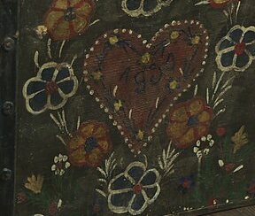
Лице скрині: три поля й рік
зі взірця: Весільна скриня, мальована; Весільна скриня, Центральна Україна, 1930
- Поділ 39 : 22 : 39 і береги — з першої скрині; серце з роком — вирізка з другої. Темне тло й колір ліній — з пікселів.
- Квітів не намальовано: поля порожні, у них стоять числа. Густий розпис на екрані не відтворити без художниці.
Чого не брати
- Квіти «як на скрині» вектором: вони тримаються на мазку.
- Темний «дубовий» колір як шапку кожного екрана (сволок Gemini): жодного сволока не роздивлено.
- Чорну «дубову» смугу: на знімках сволок бурий і матовий, не чорний.
- Розети як значки навколо тексту: на сволоку їх три на всю балку, між ними гладке дерево.
Кераміка: косівська кахля й піч
три поливи на вершковому тлі; колір не слухається лінії; піч — стіна з окремих сцен
Що було в текстах. Claude і Fable згадують косівську мальовану кераміку як факт (зелене й жовте, продряпаний контур, «сльози» поливи); Gemini взяв з опішнянської два кольори — «теракота» #9E472A для головної кнопки і «полива-зелень» #2D5A4C. Жодної кахлі чи миски ніхто не відкривав.
Чого там не видно. Яке те зелене насправді, що намальовано і як кахлі складаються в піч.
Не знайдено. Мальованої опішнянської миски зблизька й гутного скла у відкритих збірках не знайшла.

Петро Кошак. Кахля «Олень», Пістинь, 1911
Глина, розпис, полива. Знімок музею, Wikimedia Commons, суспільне надбання. Розмір кахлі сторінка не називає — невідомо.
Джерело: сторінка файлу · знімок: Original: Piotr Koshak (1864—1940/1941) Photograph: National Museum of Hutsulshchyna and Pokuttia Folk Art · права: Public domain · підпис на сторінці: «П. Кошак. Олень. Изразец. Глина, роспись, глазурь. Пистынь. 1911. Национальный музей народного искусства Гуцульщины и Покутья имени И. Кобринского»
Побачене
- Два олені стоять один проти одного, носами до рослини посередині, з якої виростають три великі квітки-розети. Це та сама будова, що на київських колтах за сімсот років до того: двоє дзеркально обабіч дерева.
- Барв три, і більше нема: мідно-зелена (#36C391, прозора й яскрава), вохриста жовта (#C8B949) і коричневий контур (#68664D). Тло — вершкове (#F5F3D8), його близько третини.
- Колір не тримається контуру. Зелене розпливається за лінію листка плямою, жовте стікає патьоками від верхнього краю вниз. Контур продряпано до випалу, поливу налито потім — і вона пішла, куди пішла. Від цього річ жива; обведи акуратно — буде розмальовка.
- Тіла оленів усіяні зеленими цятками по жовтому, роги — як гілки рослини. Звір і рослина зроблені з того самого.
- По краю кахлі — рамка з коричневих крапок, нерівних, кожна інша. Олені не однакові: лівий нижчий, у правого довша шия.
Виміри. Нижня половина кахлі — олені, верхня — квіти. Вісь рослини майже посередині, зсунута вліво. Вершкового тла ≈ 30 %, зеленого разом із розмитим ≈ 19 %, жовтого ≈ 7 %.
Колір із пікселів
За чим упізнають. Яскраве прозоре зелене з жовтими патьоками на вершковому — і те, що колір виходить за лінію.

Гуцульська піч із мальованих кахлів (кут печі з карнизом)
Знімок: Lantuszka, 21.08.2017, Wikimedia Commons, CC BY-SA 3.0. Місце, майстра й час печі сторінка не називає — невідомо. Знято в темній хаті: кольори на знімку темніші й сіріші, ніж у кахлі Кошака.
Джерело: сторінка файлу · знімок: Lantuszka · права: CC BY-SA 3.0 · підпис на сторінці: «Traditionally painted Hutsul stove tiles»
Побачене
- Піч — це стіна з окремих картин. Кожна кахля — своя сцена у своїй рамці з крапок: олень біля вазона; чоловік із люлькою везе тачку, за ним цап; лев грає на басолі перед хатою з вікном і прапорцем. Сцени не пов'язані між собою і не повторюються.
- Єдине, що повторюється, — карниз угорі: довга смуга однакових квіток-дзвоників із листям навхрест. Повтор тримає край, усередині — свобода.
- Між кахлями — зелені шви: полива затекла в стик. Кут печі замикають точені колонки з шишками.
- Серед квітів і звірів — буденне: тачка, люлька, хата з фіранкою. Майстер малював те, що бачив, і смішне не боявся.
Виміри. Кахля ≈ 0,88 : 1 (трохи вища, ніж широка). Карниз заввишки ≈ 0,28 висоти кахлі. Рамка з крапок ≈ 1/20 ширини кахлі.
За чим упізнають. Рамка з крапок довкола кожної сцени і смуга однакових квіток над ними.

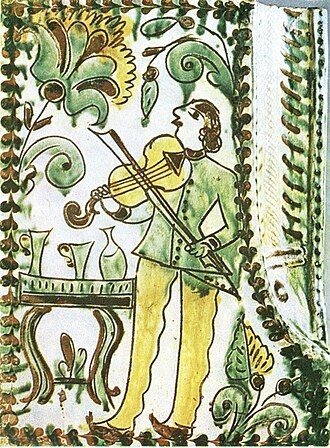
Олекса Бахматюк. Кахля «Скрипаль», Косів, бл. 1870
Wikimedia Commons, суспільне надбання. Дісталась лише мала копія (330 пікселів): подробиці штриха не роздивлено.
Джерело: сторінка файлу · знімок: Олекса Бахматюк · права: Public domain · підпис на сторінці: «Олекса Бахматюк. Кафель “Скрипач”.около 1870 року»
Побачене
- Скрипаль у зеленому каптані й жовтих штанях стоїть біля столу з пляшками; над ним квітка, більша за нього самого. Людина й орнамент — в одній рамці, одного розміру, жодне не тло для іншого.
- Рамка — навскісні мазки-листки, не крапки, як у Кошака: у кожного майстра свій край, за ним і впізнають руку.
Колір із пікселів
За чим упізнають. Невідомо, чи впізнала б без підпису: мала копія.

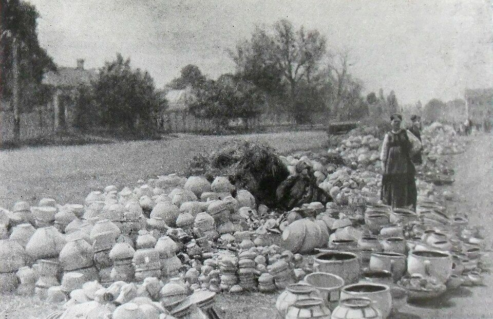
Гончарний ряд на опішнянському ринку, кінець ХІХ ст.
Світлина з книжки «Історія міст і сіл Української РСР. Полтавська область» (1967). Wikimedia Commons, суспільне надбання. Автор світлини невідомий.
Джерело: сторінка файлу · знімок: Unknown author Unknown author · права: Public domain · підпис на сторінці: «A potter's row in the Opishnya's market, the end of the XIX century. Українська: Гончарний ряд на опішнянському ринку, кінець ХІХ століття.»
Побачене
- Сотні горщиків лежать просто на траві довгим валом, скільки сягає око; між ними стоїть жінка й вибирає. Жодного прилавка, полиці чи вивіски: каталог — це ряд, уздовж якого йдуть.
- Горщики одного гончаря схожі, та не однакові; розписаних мало, більшість — гола глина з одним-двома поясками. На ринку кераміка — не оздоба, а товар, і краса її в множині.
- Найбільші макітри стоять спереду, дрібне — купою позаду: розклад за розміром, не за узором.
За чим упізнають. Вал горщиків на землі й постать серед них.

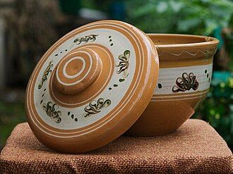
Опішнянська макітра з покришкою, прикрашена фляндрівкою
Знімок: ReAl, 13.07.2014, Wikimedia Commons, CC BY-SA 4.0. Майстер і рік виробу на сторінці не названі — невідомо. Дісталась мала копія (330 пікселів).
Джерело: сторінка файлу · знімок: ReAl · права: CC BY-SA 4.0 · підпис на сторінці: «Опішнянський гончарний виріб, прикрашений фляндрівкою»
Побачене
- Глина тут — сама по собі колір: тепла, жовто-руда (#9A6A3E на світлі, #68411D у тіні), неполивана. По ній ідуть білі пояси ангобу, і вже по білому — рідкі темні «пір'їни» фляндрівки з зеленими цятками (#3F5D41).
- Оздоби мало: чотири пір'їни на покришці, три на боці. Решту роблять концентричні кола від гончарного круга — річ оздоблена тим, як її зроблено.
- Зелене тут темне й глухе — зовсім не м'ятне зелене косівської кахлі. Дві кераміки, дві різні зелені барви.
Колір із пікселів
За чим упізнають. Руда глина, білий пояс і темна пір'їна на ньому.
Візуальний сенс
- Косівська кахля впізнається за трьома барвами на вершковому й за тим, що колір тече за контур. Перше переноситься на екран прямо (чотири кольори з пікселів), друге — ні: розмиту пляму треба або сфотографувати, або не чіпати. Намальована «під поливу» вона стає сувеніром.
- Зелених у кераміці дві. Косівське (#36C391) — світле, прозоре, майже м'ятне; поруч із фото одягу воно гучне й годиться хіба для дрібної позначки. Опішнянське (#3F5D41) — темне й глухе, близьке до «поливи-зелені» #2D5A4C із роботи Gemini. А от «теракота» Gemini #9E472A червоніша за справжню опішнянську глину (#9A6A3E): та жовтіша й світліша.
- Сильніша за мотив — будова печі: рамка з нерівних крапок довкола кожної сцени і один повторюваний карниз над усіма.
Функціональний сенс для Люстерка
- Збережені образи. Піч — готова форма добірки: кожен образ — окрема кахля у своїй рамці, поруч, без спільного сюжету; зверху — карниз, один на всіх. Вона й росте як піч: рядами.
- Сумнів і заміна речі. Двоє обабіч рослини — удруге після колтів: річ і її заміна стоять дзеркально, між ними те, заради чого порівнюють.
- Відгук словами. У кахлі поруч із квіткою є тачка й люлька. Розмова про одяг теж може мати буденне й смішне поруч із гарним — це тон, а не оздоба.
- Образ із речей каталогу. Опішнянський ряд: каталог — це не сітка карток, а вал схожих речей, уздовж якого йде жінка й бере одну. Вибір — рух уздовж ряду, а не перегляд таблиці.
Перенесення поруч зі взірцем
збережені образи: піч із кахлів
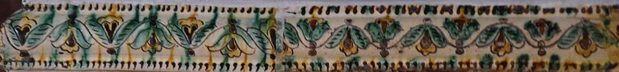

Збережені образи — піч
зі взірця: Гуцульська піч із мальованих кахлів (кут печі з карнизом); Петро Кошак. Кахля «Олень», Пістинь, 1911
- Карниз і перша кахля — вирізки зі знімка печі. Решта — порожні кахлі тих самих пропорцій (0,88 : 1), карниз 0,28 висоти кахлі; тло й колір крапок — із кахлі Кошака.
- Рамку з крапок тут зроблено рівною — і видно, чого бракує: нерівності руки. Для справжнього екрана рамку треба знімати з кахлі.
Чого не брати
- Зелене й жовте як кольори кнопок «під кераміку»: без вершкового тла й патьоків це просто зелена кнопка.
- Оленів, левів і скрипалів як ілюстрації: вони авторські, і за кожним — рука конкретного майстра.
- «Теракоту» #9E472A як колір головної кнопки: на роздивленій макітрі глина жовто-руда, а не цегляно-червона, і вона — тло, а не акцент.
Писанка
найтонше — найсвітліше; тло лягає останнім
Що було в текстах. Писанку згадано як факт (список ЮНЕСКО, 2024) і один раз як дію: у варіанті Fable «закріпити» шар образу — «як віск писанки». Самих писанок не показано.
Чого там не видно. Як поділено яйце, які кольори і в якому порядку вони лягли.
Не знайдено. Музейної писанки з назвою села й року (збірки Музею писанки в Коломиї, Музею Гончара) з вільними правами не знайшла; взірець один, тому висновки — про гуцульську писанку з цього кошика, не про писанку взагалі.

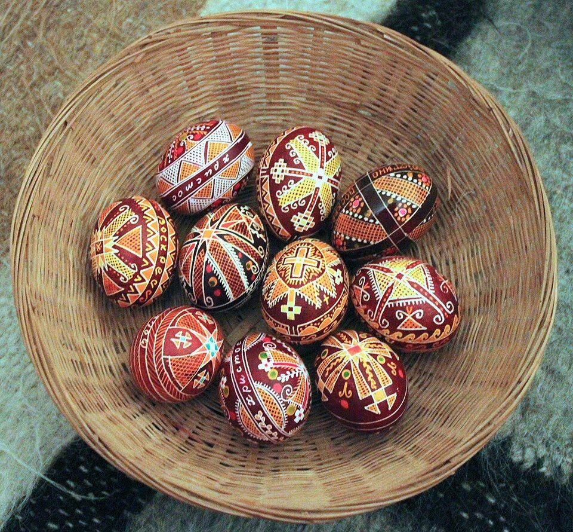
Гуцульські писанки в кошику
Знімок: Lubap, 15.07.2012, Wikimedia Commons, CC BY-SA 4.0. Майстринь, село й рік писанок сторінка не називає — невідомо.
Джерело: сторінка файлу · знімок: Lubap · права: CC BY-SA 4.0 · підпис на сторінці: «Traditional pysanky from the Hutsul ethnographic region of Ukraine»
Побачене
- Десять писанок, і жодна не повторює іншу, хоча всі з одного кошика й одних барв. Спільне — тло: темне вишнево-буре (#623530, у тіні #2E1C1D), якого на кожному яйці менше половини.
- Порядок барв видно з товщини. Білі лінії — найтонші, волосяні: їх писали першими, по білій шкаралупі. Жовте лягає ширшими плямами — хрести, східці. Помаранчеве — ще ширше, цілими полями. Темне тло прийшло останнім і залило все, що лишилось. Найсвітліше — найдрібніше.
- Поля між поясами не зафарбовано суціль: їх засіяно дрібною білою сіткою по помаранчевому. Здалеку сітка дає третій колір — рожево-пісочний (#A47B63), якого у фарбах не було.
- Яйце ділять широкі темні пояси, що перехрещуються на боці; у кожному клині — трикутник або зірка. Хрест на одній писанці складено зі східців, кінці — сходинками, не прямі.
- На одній писанці по поясу йде напис білими літерами — слова стоять там, де в інших крапки.
Виміри. Часток барв не міряла: писанки лежать у плетеному кошику, і його колір змішується з помаранчевим на знімку.
Колір із пікселів
За чим упізнають. Біла волосяна лінія й дрібна сітка на темно-вишневому. Товста лінія й чисті заливки — вже крашанка з наліпкою.
Візуальний сенс
- Писанку впізнають за тонкою світлою лінією на темному. Це обернене до всього іншого в альбомі: рушник, сорочка й книга — темне на світлому. Темне тло поруч із фото одягу важке; на екрані це хіба один стан, не весь продукт.
- Сітка, що дає третій колір, — чесний спосіб зробити півтон без градієнта.
Функціональний сенс для Люстерка
- Чекання збирання. Писанку пишуть шарами від світлого до темного, і кожен шар закриває воском те, що має лишитись. Образ теж збирається шарами; поки стилістка працює, можна показувати, що вже «закріплено» (нагода, палітра, перша річ), — від найсвітлішого до найтемнішого. Але сам процес із одного знімка готових писанок не видно: це здогад із порядку товщин, а не побачене.
- Збережені образи. Кошик: десять різних, що тримаються разом одним тлом. Добірка образів не мусить бути сіткою однакових карток — досить одного спільного.
Чого не брати
- Яйце як форму картки чи значка.
- Зірки, хрести й «безконечники» як набір значків: без воску й округлості це векторний орнамент.
- Темно-вишневе тло на весь екран: фото одягу на ньому гасне.
Народна картина: «Козак Мамай»
людина посередині, її речі — довкола, кожна окремо; підпис у самій картині
Що було в текстах. Народне малярство в роботах представлене петриківкою, Примаченко й Білокур як «джерела мотивів» і застереженням про авторські права; «Мамая» не назвав ніхто.
Чого там не видно. Жодної картини.
Не знайдено. Ікони на склі, петриківського розпису й робіт Примаченко з вільними правами у відкритих збірках не знайшла (на Wikimedia Commons категорії порожні або з роботами авторів, чиї права діють). Мала копія «Мамая» XVIII ст. з Чернігівського музею (330 пікселів) дісталась, та не роздивлена.

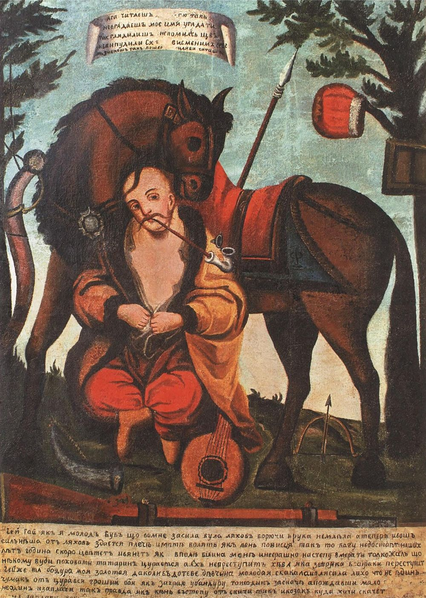
«Козак Мамай». Невідомий художник, 1728
Олія. Одеський художній музей. Wikimedia Commons, суспільне надбання. Дісталась копія 500 пікселів: напис унизу видно як смугу, прочитати не можна.
Джерело: сторінка файлу · знімок: Unknown author Unknown author · права: Public domain · підпис на сторінці: «Козак Мамай. Невідомий художник. Олія. Одеський художній музей. 日本語: コサック・ママーイ English: Cossack Mamay»
Побачене
- Козак сидить посередині, підібгавши ноги, обличчям до глядача, і нічого не робить. Усе, що він має, розкладено довкола, і кожну річ видно окремо, цілою: кінь за спиною, спис устромлено в землю, шапка висить на дереві праворуч, шабля — на дереві ліворуч, кобза лежить біля ніг, лук зі стрілами — на землі, люлька — в зубах. Жодна річ не затуляє іншу.
- Це не сцена, а перелік: людина і її добро. Речі не лежать купою й не вдягнені на нього — вони розвішані, як на жердці.
- Картина має власний текст. Угорі — біла стрічка-сувій на чотири рядки, внизу — смуга письма на всю ширину, близько восьмої частини висоти. Підпис — частина картини, написаний тією ж рукою.
- Барви земляні: темно-бурий кінь і дерева (#3D342F, #584439), сіро-зелене небо (#9EAB9B), і на цьому два теплі червоні — шаровари й шапка (#CB6F4E, #904936). Червоне — тільки на людині та її шапці.
- Кінь схилив голову до козака; це єдиний рух у картині.
Виміри. Нижня смуга письма ≈ 12 % висоти, стрічка вгорі ≈ 8 %. Постать займає середню третину ширини. Речей довкола — сім.
Колір із пікселів
За чим упізнають. Сидить посередині, а довкола розвішано його речі. Прибрати речі — лишиться портрет.
Візуальний сенс
- «Мамай» упізнається не барвами й не мазком, а розкладом: постать у центрі й речі довкола, кожна окремо. Це переноситься на екран повністю, бо не потребує ні полотна, ні олії.
- Червоне лише на людині: решта картини землиста. Поруч із фото одягу такий розклад не сперечається — яскраве дає сама річ.
Функціональний сенс для Люстерка
- Образ із речей каталогу. Це найпряміший взірець з усього альбому. Образ — жінка посередині, а її речі розвішані довкола, кожну видно цілою й окремо; так само, як у «Мамая» шапка на дереві, а не на голові. Зараз продукт показує або зібране фото, або список — тут і те, і те разом.
- «Що я зрозуміла». Смуга письма внизу картини — місце для слів про образ: чому саме ці речі. Вона належить образу, а не стоїть окремим повідомленням.
- Сумнів і заміна речі. Річ, що висить окремо, можна зняти й повісити іншу, не розбираючи всього образу.
Перенесення поруч зі взірцем
образ: постать і речі довкола
Образ: постать і речі довкола
зі взірця: «Козак Мамай». Невідомий художник, 1728
- Місця речей — з картини: шапка праворуч угорі, спис над плечем, шабля ліворуч, кобза біля ніг, лук праворуч унизу. Постать — середня третина. Смуга слів — 12 % висоти.
- Замість малюнків — порожні місця під фото речей каталогу: малювати шаблю чи кобзу тут нема чого.
Чого не брати
- Самого козака, коня й кобзу як картинку чи талісман: це й є шароварщина.
- «Народний» кривий малюнок як стиль ілюстрацій.
Стародрук і рукописна книга
найгустіше — вгорі; назва врізана в заставку; червоного — один рядок
Що було в текстах. Claude збудував на Острозькій Біблії концепцію «Кіновар»: чорне — текст, червоне — те, що веде; буквиця, пілкроу, «зміст» із відточієм. Gemini відкинув це як архаїку. Сторінки книги ніхто не відкривав.
Чого там не видно. Скільки на сторінці червоного, де стоїть заставка, як збудовано список і скільки паперу лишено порожнім.

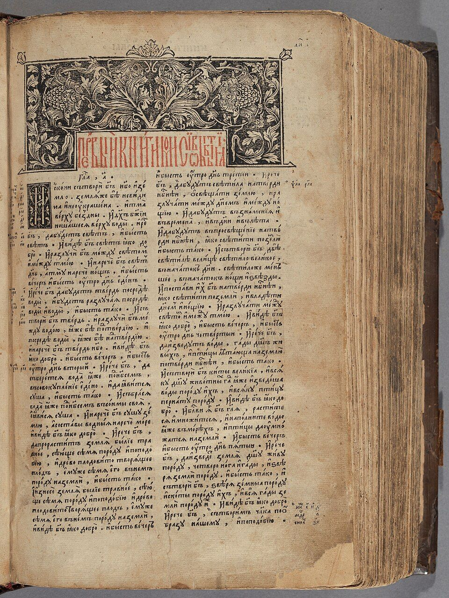
Острозька Біблія, початок книги Буття. Острог, друкарня Івана Федоровича, 1581
Wikimedia Commons, суспільне надбання. Примірник і місце зберігання сторінка знімка не називає — невідомо.
Джерело: сторінка файлу · знімок: Ivan Fyodorov · права: Public domain · підпис на сторінці: «First page of the Book of Genesis in the Ostrog Bible, published in 1581 in Ostroh, Grand Duchy of Lithuania (modern-day Ukraine). It was the first complete printed publication of the Bible in Church Slavonic.»
Побачене
- Заставка — чорна дошка, на якій малюнок білий: листя, шишки й виноград вибрано з дерева, а тло лишилось і надрукувалось. Це найтемніше місце сторінки: чорного в ній понад 40 %, у тексті під нею — 12–15 %. Сторінка важка зверху й легшає донизу.
- Назву книги не поставлено під заставкою — її врізано в заставку. У нижньому краї дошки вирубано прямокутне вікно на 58 % ширини, і в ньому стоїть один рядок червоної в'язі. Орнамент обіймає назву з трьох боків.
- Червоного на всій сторінці — цей один рядок. Колір — не яскрава кіновар, а цегляно-рожевий (#AA5F49 на знімку), і він тримається лише тому, що поруч багато чорного.
- Заставка виходить за свою рамку: над верхнім краєм по центру проростає квітка, на кутах — бруньки. Рамка є, але рослина її не слухає.
- Нижче — дві колонки дрібного рівного письма, між ними вузький просвіт. Буквиця — теж біле по чорному, заввишки чотири рядки, і стоїть на березі, ліворуч від колонки. Примітки — крихітним шрифтом на зовнішньому березі.
- Папір теплий, плямистий (#C4B297 на знімку), фарба — коричнево-чорна (#2D1F17). Чистого білого й чистого чорного нема.
Виміри. Заставка ≈ 2,2 : 1, займає ≈ 15 % висоти набору. Вікно назви — 58 % ширини й 35 % висоти заставки. Густота чорного: заставка 41–46 %, текст 12–15 %.
Частка чорного по висоті сторінки: заставка — втричі густіша за текст Смуг 40, згори вниз; довжина риски — частка узору в смузі.
Колір із пікселів
За чим упізнають. Чорна заставка з білим листям і червоний рядок, врізаний у неї знизу.

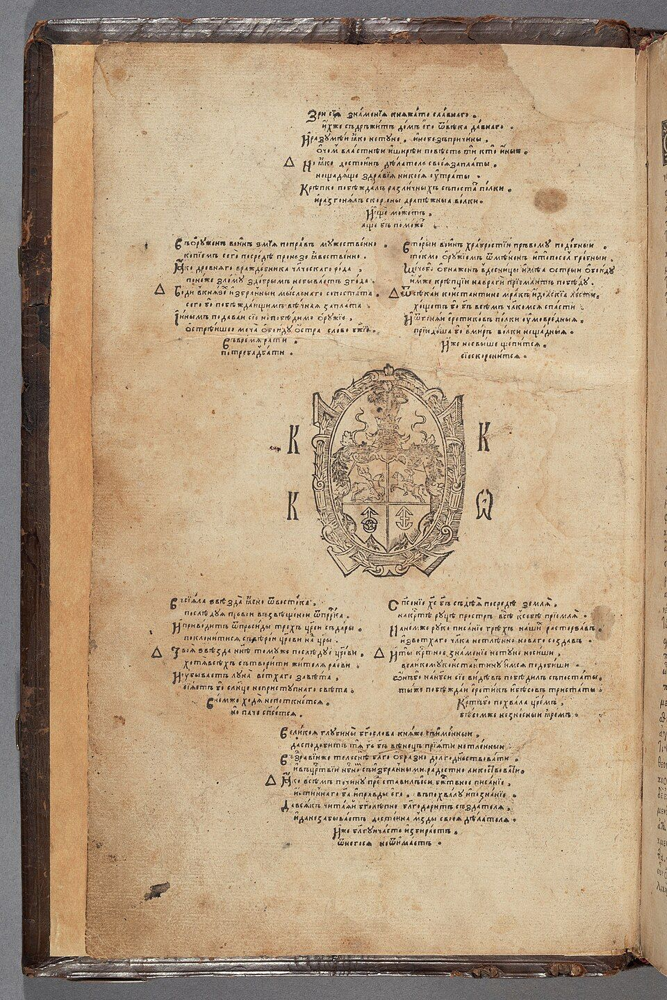
Острозька Біблія, зворот титулу: вірші на герб князя Острозького. Острог, 1581
Wikimedia Commons, суспільне надбання. Опис на сторінці знімка помилково повторює підпис книги Буття; що це зворот титулу, каже назва файлу.
Джерело: сторінка файлу · знімок: Ivan Fyodorov · права: Public domain · підпис на сторінці: «First page of the Book of Genesis in the Ostrog Bible, published in 1581 in Ostroh, Grand Duchy of Lithuania (modern-day Ukraine). It was the first complete printed publication of the Bible in Church Slavonic.»
Побачене
- Сторінка майже порожня: дрібний текст займає приблизно третину аркуша. Герб стоїть посередині в овальному картуші, обабіч нього — чотири великі літери, по дві з боку.
- Вірші набрано фігурно: кожна строфа звужується донизу лійкою, останній рядок — одне-два слова по центру. Набір поводиться як орнамент, хоча це лише букви.
- Над і під гербом строфи стоять у дві колонки, а перша й остання — одна по центру: сторінка симетрична відносно герба в обидва боки.
- На березі біля строф — маленькі трикутники-позначки. Жодної лінійки, рамки чи заставки.
За чим упізнають. Герб в овалі й строфи-лійки довкола нього на порожньому аркуші.

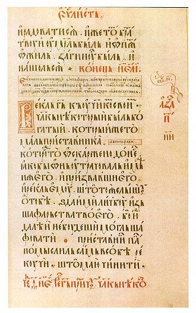
Пересопницьке Євангеліє, аркуш 291 з ініціалом, 1556–1561
Рукопис. Wikimedia Commons, суспільне надбання. Дісталась лише мала копія (330 пікселів): письмо видно як ритм, літери — ні.
Джерело: сторінка файлу · знімок: Unknown author Unknown author · права: Public domain · підпис на сторінці: «Сторінка.»
Побачене
- Письмо велике й рідке: на сторінці два десятки рядків, тоді як у друкованій Біблії — півсотні. Колонка вузька й висока, береги широкі.
- У текст вставлено рамку з дрібним письмом — пояснення, вп'ятеро дрібніше за основний текст. Головне й побіжне розведено розміром і рамкою, а не кольором.
- Червоним (#C97A4A на знімку) — перший і останній рядок сторінки та позначки на березі; чорнило основного тексту — коричневе (#52340D).
За чим упізнають. Невідомо: копія замала, щоб судити.
«Апостол», Львів, друкарня Івана Федоровича, 1574: герб Ходкевича і сторінка переліку
Іван Федорович, 1574. сторінка джерела · зображення. Права: сторінка збірки прав не називає — лише посиланням.

Сторінка переліку: кожен запис починається червоною літерою, винесеною ліворуч за край колонки, а його номер стоїть червоним на правому березі. Перший рядок запису — на всю ширину, другий — коротший і по центру. Червоного (#C48664 на скані) менше чверті відсотка площі, і його досить, щоб око йшло від запису до запису. Колонка займає близько половини ширини аркуша.
Візуальний сенс
- Стародрук красивий вагою: одна густа чорна пляма вгорі й рівне сіре поле тексту під нею. На екрані цю роль чесно бере фото образу — воно і є найгустіше місце; заставку малювати не треба.
- Назва, врізана в темне, а не поставлена під ним, — прийом, якого в наших показах не було, і він переноситься без жодного орнаменту.
- Червоне працює лише як рідкість: один рядок на сторінку або одна літера на запис. «Кіновар» Claude фарбувала кнопки й заголовки — у книзі так не роблять.
- Без дереворита гинуть в'язь, буквиця й біле листя: намальовані шрифтом чи вектором, вони дають «під старовину».
Функціональний сенс для Люстерка
- Образ із речей каталогу. Сторінка Буття — готовий розклад: угорі важке (фото), у вирізі — назва нагоди, під ним дві колонки речей. Що головне, видно з ваги, а не з розміру букв.
- Нагода в розмові й «що я зрозуміла». Сторінка переліку з «Апостола»: кожен пункт має червону першу літеру на березі й номер праворуч — око лічить пункти, не читаючи. Так можна показати, що стилістка зрозуміла: п'ять пунктів, п'ять червоних літер.
- Знайомство. Зворот титулу: одна річ посередині, навколо порожньо, текст звужується до неї. Перший екран, де посередині — фото жінки, а не герб.
Перенесення поруч зі взірцем
образ: назва у вирізі
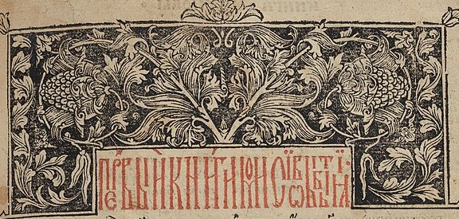
Сукня-сорочка, льон, молочна
Жакет короткий, вовна
Туфлі на низькому, шкіра
Сумка мала, через плече
Назва у вирізі
зі взірця: Острозька Біблія, початок книги Буття. Острог, друкарня Івана Федоровича, 1581
- Вгорі — вирізка заставки зі сторінки Буття. Під нею той самий розклад для образу: темний блок 2,2 : 1, вікно назви 58 % на 35 %, дві колонки під ним.
- Кольори паперу, фарби й червоного — з пікселів сторінки. Шрифт звичайний: в'язі тут не підроблено.
що я зрозуміла: перелік
Хрестини в неділю, у церкві й потім за столома
буде прохолодно
Без підборів: увесь день на ногахв
Не чорне і не білег
ти — хресна, не гостя
До тридцяти речей, що вже маєшд
Перелік із червоною літерою
зі взірця: Острозька Біблія, початок книги Буття. Острог, друкарня Івана Федоровича, 1581; «Апостол», Львів, 1574 — посиланням
- Будова запису — зі сторінки «Апостола» 1574 року (посиланням): червона літера на березі, номер праворуч, другий рядок коротший і по центру. Червоне — #AA5F49 з Острозької Біблії.
Чого не брати
- В'язь, устав і півустав шрифтом «під кирилицю»: це робота шрифтаря, а не стильова таблиця.
- Пілкроу, буквиці й рамки на кожному екрані: у книзі буквиця одна на розділ.
- Чистий червоний #FF0000 чи «кіновар» з пам'яті: на сторінках червоне цегляне й бліде.
Скоропис
рядки рідкі, а між ними тісно від петель
Що було в текстах. Роботи називають козацький скоропис поруч зі стародруком як «руку» і радять шрифти на його основі; жодного документа не показано.
Чого там не видно. Як виглядає рядок, написаний швидко, і що в ньому робить око.
Не знайдено. Листів Хмельницького й універсалів гетьманів у придатному розмірі не дісталось (Wikimedia Commons віддає їх із затримкою, оригінали — відмовою). Сучасних українських шрифтів на основі скоропису не відкривала.

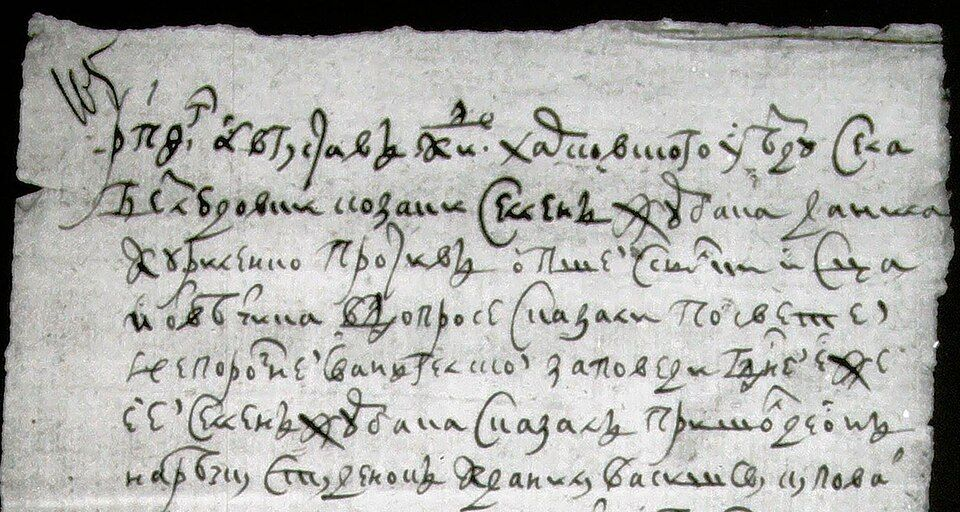
«Судное дело» міста Чугуєва, 1681 — найдавніший документ про Безлюдівку
Wikimedia Commons, суспільне надбання. Писар невідомий. Знімок чорно-білий: кольору чорнила й паперу не видно.
Джерело: сторінка файлу · знімок: ? (Роки життя: ?) · права: Public domain · підпис на сторінці: «"Судное дело" міста Чугуєва»
Побачене
- Рядки стоять далеко один від одного: відстань між ними десь учетверо більша за висоту малої літери. Але порожньо між ними не лишається — туди йдуть петлі, хвости й виносні літери, написані над словом.
- Є кілька літер-велетнів: «С» розкручується колом, що обіймає два сусідні слова; «ж» і «х» — великі косі хрести. Вони стоять не на початку рядка, а де трапились, і дають сторінці ритм, як великі квітки на рушнику.
- Натиск пера різний: вертикалі товсті, з'єднання волосяні. Рядки повзуть угору праворуч.
- Угорі ліворуч — номер аркуша великим розчерком, удвічі більшим за текст.
Виміри. Крок рядків ≈ 4 висоти малої літери. На сімох рядках — близько десяти літер-велетнів.
За чим упізнають. Круглі петлі «С» та виносні літери над рядком. Вирівняти рядки й прибрати петлі — буде просто курсив.

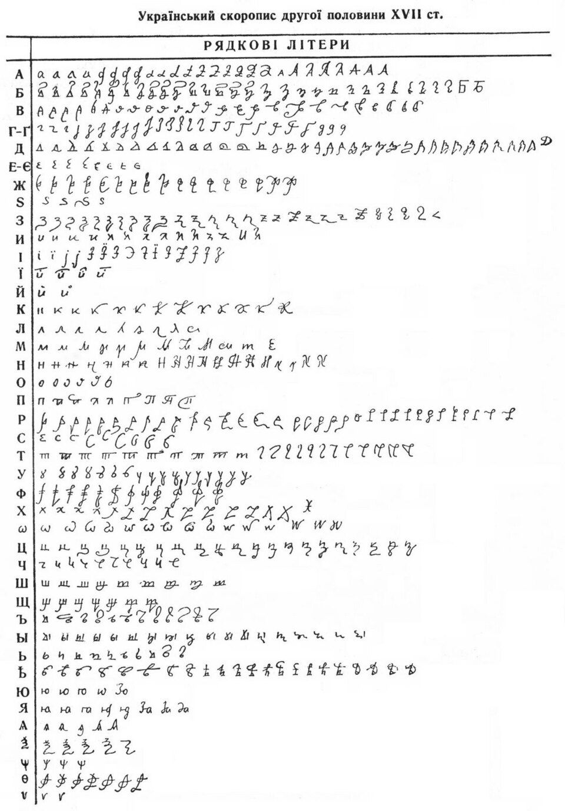
Таблиця «Український скоропис другої половини XVII ст.: рядкові літери»
Wikimedia Commons, CC BY-SA 3.0, виклав Fordman, 16.08.2011. З якої книжки таблиця, сторінка не каже — невідомо.
Джерело: сторінка файлу · знімок: uk:Fordman · права: CC BY-SA 3.0 · підпис на сторінці: «Український скоропис другої половини XVII ст.»
Побачене
- У скорописі нема «літери Д» — є сорок її форм. У таблиці на кожну букву — від п'яти до сорока накреслень, і сусідні часом не схожі між собою: «в» буває колом, квадратом і петлею, «д» — трикутником і гачком із хвостом.
- Найбільше варіантів мають літери з хвостами й петлями (д, р, в, з, т) — саме ті, що на документі 1681 року стають «велетнями».
- Тому шрифт «під скоропис», де кожна літера має одну форму, втрачає головне: у писаря форма залежала від сусідки й від поспіху.
За чим упізнають. Рядок, у якому та сама літера двічі написана по-різному.
Автограф єпископа Рафаїла Заборовського, 1745
Рафаїл Заборовський, 1745. сторінка джерела. Права: суспільне надбання; дісталась копія 250 пікселів, тому лише посиланням.
.jpg){kind=link}
Файл названо автографом Мазепи, а опис на сторінці каже: Заборовський, 1745. Видно лише будову листа: звертання винесено вправо окремим рядком, текст — рівним блоком, підпис унизу праворуч із розчерком, удвічі ширшим за саме ім'я.
Візуальний сенс
- Скоропис — це швидкість, яку видно. Його краса в нерівності: велетні серед дрібних, петлі між рядками. Шрифт із однаковими літерами цього не передасть, на екрані скоропис живе лише як справжній почерк або знімок.
- Переноситься одне: рідкі рядки з великим кроком і дрібні «виносні» слова над рядком.
Функціональний сенс для Люстерка
- Відгук словами. Виносна літера — це поправка над рядком, не закреслення. Якщо жінка править те, що стилістка зрозуміла, поправку можна ставити над словом, а не замість нього: видно і що було, і що стало.
- Підпис із розчерком унизу праворуч — місце, де лист закінчується рукою. Образ так само може закінчуватись підписом жінки («вдягну»), а не кнопкою.
Чого не брати
- Шрифти «під скоропис» для інтерфейсу: дрібним кеглем на телефоні їх не прочитати.
- Розчерки як оздобу заголовків.
Нарбут: «Українська абетка»
одна літера на аркуш — і вся картина з неї; та сама літера світла й темна
Що було в текстах. Усі чотири роботи називають «Абетку» Нарбута: «козацьке бароко», «літери з рослинного орнаменту», «одна виразна літера-ініціал шанобливіша за бордюр». Радять шрифти за його мотивами. Аркуша не відкривав ніхто.
Чого там не видно. Скільки на аркуші літери, а скільки картини; які в нього барви; що він робить з літерою.

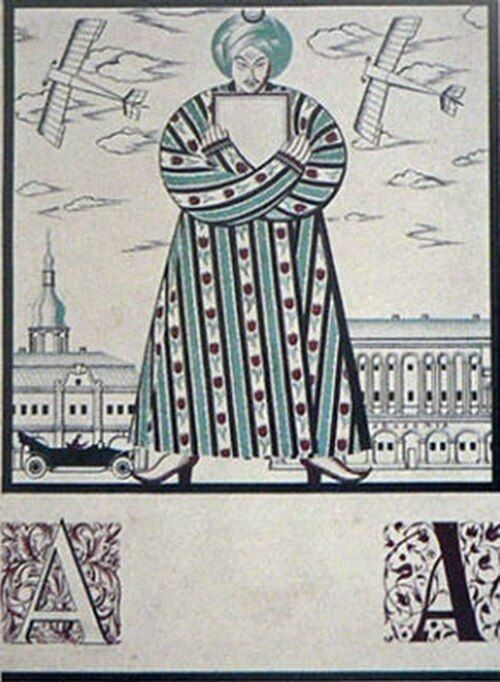
Георгій Нарбут. «Українська абетка», літера «А». Київ, 1919
Wikimedia Commons, суспільне надбання; джерело знімка — «Історична правда». Знімок малий (500 пікселів) і обрізаний праворуч; де зберігається аркуш, сторінка не каже — невідомо.
Джерело: сторінка файлу · знімок: Георгій Нарбут (1886–1920) · права: Public domain · підпис на сторінці: «Українська абетка, літера А, Київ, 1919»
Побачене
- Літери на аркуші мало. Картина займає верхні 72 %, а «А» стоїть унизу, у вузькій смузі, двічі — у двох квадратиках по краях, і між ними порожньо. Головне на аркуші абетки — не літера, а світ, який з неї починається.
- Усе в картині — на «А»: аероплани (два, дзеркально), автомобіль, архітектура, і посередині — велетень у смугастому халаті й чалмі, вищий за дзвіницю. Правило одне й смішне, і воно збирає докупи речі, які інакше не зустрілись би.
- Дві літери внизу — та сама «А» у двох станах. Ліва — світла, об'ємна, на густому темному плетиві. Права — суцільна темна на світлому з рідкими гілочками. Не дві різні прикраси, а одна літера й її негатив.
- Барв три: чорна лінія (#212228), сіро-бірюзова (#799796 на знімку) — халат, чалма, крила, і темно-вишнева — тільки квітки на халаті й трохи в літерах. Папір сірувато-білий. Бірюзи близько 4 % аркуша, і її досить.
- Велетень тримає перед грудьми порожню білу табличку — єдине чисте місце в картині, якраз посередині. Око йде туди.
- Лінія двох товщин і жодної проміжної: жирні смуги халата й волосяне штрихування будинків і хмар.
Виміри. Картина ≈ 72 % висоти аркуша, смуга з літерами ≈ 28 %. Квадрат літери ≈ чверть ширини смуги; середина смуги (≈ половина ширини) порожня. Постать — середня третина ширини.
Колір із пікселів
За чим упізнають. Жирна чорна смуга поруч із волосяним штрихом, сіра бірюза й літера в квадратику з плетивом.
Георгій Нарбут. «Українська абетка» 1917 року: обкладинка й аркуш «А»
Георгій Нарбут, 1917. сторінка джерела. Права: суспільне надбання; дісталась копія 250 пікселів, тому лише посиланням.

Обкладинка: посередині чорний силует чорта у стрибку, довкола — юрба дрібних постатей; обабіч, згори донизу, — стовпчики кубиків із літерами, якими картину взято в рамку. Аркуш «А» 1917 року чорно-білий: та сама будова, що й 1919-го — велика постать із табличкою, унизу смуга з двома «А» по краях. Дрібниць не видно.
Візуальний сенс
- Нарбута впізнають за рукою — за тим, як товста лінія стоїть поруч із волосяною, — і за сірою бірюзою з вишневим. Барви на екран переносяться; рука — ні: її не замінить шрифт «за мотивами».
- Будова аркуша переноситься цілком: велика картина, вузька смуга під нею, знак по краях смуги й порожня середина.
- Літера та її негатив — готова пара станів (світлий і темний екран, «було» й «стало») без нового малюнка.
Функціональний сенс для Люстерка
- Нагода в розмові. Аркуш абетки каже: одна літера — один світ. Нагода теж може мати свій аркуш, де все — з неї: не значок «робота», а картина, зібрана з речей цієї нагоди.
- Знайомство й фото. Порожня табличка посеред густої картини — місце, куди лягає фото жінки: довкола може бути багато, поки середина чиста.
- Збережені образи. Абетка — добірка, де кожен аркуш має один знак у кутку. За ним гортають.
Чого не брати
- Шрифт «під Нарбута» на кнопках і заголовках: упізнається рука, а не обриси літер.
- Чортів, козаків і велетнів як ілюстрації продукту.
- Рослинне плетиво як тло: у нього воно живе в квадратику завбільшки з ніготь.
Кричевський: будинок Полтавського земства
оздоба високо, під руками — спокійна стіна; скошений кут живе у шибці
Що було в текстах. Усі роботи називають Василя Кричевського батьком українського модерну й беруть від нього одне — «вікно Кричевського», скошені кути (`--ск: 16px`): ними зрізали картки, кнопки й аркуші. Зведення відкинуло скіс як прикрасу без роботи.
Чого там не видно. Самої будівлі: де на ній той скіс, скільки його, з чого складено стіну і що робить оздоба.

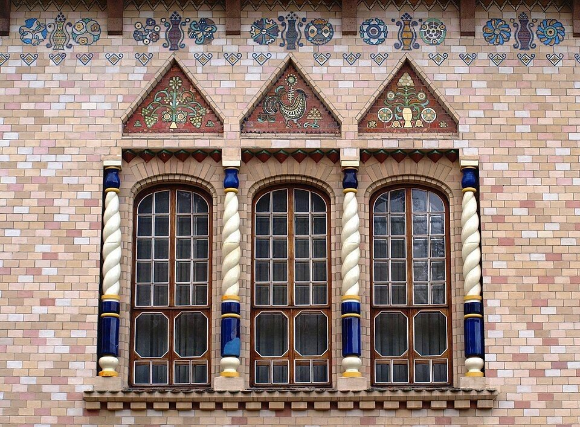
Потрійне вікно будинку Полтавського губернського земства (тепер краєзнавчий музей), арх. В. Кричевський, 1903–1908
Знімок фасаду: Batsv, 13.09.2015, Wikimedia Commons, CC BY-SA 4.0. Роки будівництва й автора майоліки сторінка знімка не називає — узято із загальновідомого про будівлю, на сторінці — «невідомо».
Джерело: сторінка файлу · знімок: Batsv · права: CC BY-SA 4.0 · підпис на сторінці: «uk:Будинок Полтавського губернського земства ( Полтавський краєзнавчий музей ), Полтава , пл. Конституції , 2»
Побачене
- Стіна не одного кольору. Вона складена з цегли п'яти близьких тонів, покладеної без порядку: три пісочні (#DDBFA6, #EAD0BE, #CBAD99) дають дві третини, майже біла (#EFE4E0) — приблизно кожна восьма, рожева (#BF9388) — кожна дванадцята. Здалеку це читається як тканина з непрофарбованою ниткою, а не як мур.
- Оздоба зібрана вгорі, куди рука не дістає: над кожним вікном трикутний щипець із майоліковою вставкою (темно-червоне тло #896156, на ньому вазон, півень, знову вазон — зелене, жовте, біле), вище — пояс синьо-білих розет із вазами. Нижче підвіконня — жодної прикраси.
- Три вікна розділяють кручені керамічні колонки кольору вершків із кобальтовими (#121227) базою й верхом і вузькими жовтими кільцями. Це єдине місце, де на фасаді є чистий насичений колір, і його дуже мало — чотири вузькі стовпчики.
- Скошений кут тут є, але не там, де його шукали: зрізано не стіну й не вікно, а шибки нижніх стулок — вісім кутів кожної, зріз десь п'ята частина ширини. Над ними й під ними — звичайні квадратні шибки. Скіс — виняток серед прямих кутів, одна смуга на все вікно.
- Щипці над вікнами не однакові: у середньому — птах, у крайніх — вазони, і ті два теж різні. Повтор тримає форма трикутника, а не малюнок.
Виміри. Щипець заввишки ≈ 0,39 висоти вікна. Колонка до вікна за шириною ≈ 1 : 4,6. Цеглина ≈ 2,2 : 1, перев'язка на пів цеглини. Скошені шибки — одна смуга з трьох у стулці.
Колір із пікселів
За чим упізнають. Строката пісочна цегла й три гостроверхі щипці з майолікою над вікнами. Прибрати меланж — лишиться звичайний цегляний дім.

Головна зала будинку Полтавського губернського земства
Знімок: Motik20071, 29.04.2018, Wikimedia Commons, CC BY-SA 4.0. Розписи зали — С. Васильківський, М. Самокиш (за загальновідомим; сторінка знімка авторів не називає).
Джерело: сторінка файлу · знімок: Motik20071 · права: CC BY-SA 4.0 · підпис на сторінці: «Будинок земства , Полтава , пл. Конституції, 2»
Побачене
- Зала поділена по висоті на три пояси з різною густотою. Склепіння біле, по ньому рідко розсипано дрібні сині квітки — так само, як «поле» на рукаві сорочки. Нижче — картини в півкруглих нішах. Ще нижче, на висоті людини, — світло-зелена кахля (#7E8B78 на знімку), по одній малій квітці на плитку.
- Картина сидить у дузі, і орнамент іде тільки по дузі та смугою під картиною (синьо-зелена лоза по білому). Сама картина орнаменту не має, рама — це й є оздоба.
- Двері мають зрізаний верх — трапецію; це той самий скіс, що в шибках, і знову він лише в прорізі, крізь який проходять.
- Чим ближче до рук і очей людини, тим спокійніша поверхня; чим вище — тим більше малюнка. У наших показах було навпаки: орнамент клали на кнопки.
Виміри. Торцева стіна знизу вгору: кахля ≈ 33 %, смуга лози ≈ 23 %, картина в дузі ≈ 44 %. Картина в дузі ≈ 2,6 : 1.
Колір із пікселів
За чим упізнають. Картина в дузі з орнаментом по дузі і зелена кахля внизу.
Візуальний сенс
- Краса земства — не в мотиві, а в розкладі: спокійна тепла стіна з ледь помітним меланжем, уся оздоба піднята вгору, насиченого кольору — чотири вузькі стовпчики. На екран переноситься саме цей розклад і меланж; майоліка, кручені колонки й розпис без матеріалу стають листівкою.
- Меланж із п'яти близьких тонів — готова відповідь на «плаский беж»: тло, яке не одноколірне, але й не візерунок, і яке не сперечається з фото одягу.
- Скошений кут має сенс лише як рідкісний виняток у прорізі — у «вікні», крізь яке дивляться на образ. Зрізаний на всьому підряд, він і став прикрасою, яку відкинуло зведення.
Функціональний сенс для Люстерка
- Палітра. Стіна показує, як багато кольорів живуть разом: основи багато, світлого — кожна восьма, яскравого — кожна дванадцята. Палітру жінки можна показати муром, де частка цеглин — це частка кольору в її образах, а не рядком однакових кружалець.
- Образ із речей каталогу. Картина в дузі, орнамент лише по рамі, під нею смуга — підпис, а нижче спокійна «кахля» з діями. Фото образу лишається чистим.
- Знайомство й фото. Скошена шибка — рамка для фото жінки: одне «вікно» зі зрізаними кутами серед прямокутних карток.
Перенесення поруч зі взірцем
палітра: чого багато, а що — акцент

Палітра муром
- Дев'ять рядів цегли 2,2 : 1 з перев'язкою на пів цеглини, як на вирізці. Кольори й частки — з пікселів стіни: три пісочні тони, світла кожна восьма, рожева кожна дванадцята.
- У продукті на місці цих п'яти тонів стоять кольори жінки, а частка цеглин каже, чого в її образах багато, а що — акцент.
образ із речей: три пояси зали
На зустріч із подругами, тепло і без підборів
Образ у дузі, дії на кахлі
зі взірця: Головна зала будинку Полтавського губернського земства
- Три пояси торцевої стіни зали з їхніми частками: 44 % образ, 23 % смуга, 33 % спокійний низ. Смуга лози — вирізка зі знімка, не малюнок.
- Орнаменту на кнопках нема: він лишився в смузі над ними.
Чого не брати
- Скіс на кожній картці й кнопці: у будівлі це одна смуга шибок і дверний проріз.
- Майоліку, вазони й півня як картинки: у щипці вони тримаються на глині й висоті, на екрані це наліпка.
- Кобальт як колір інтерфейсу: у Кричевського його чотири вузькі стовпчики на весь фасад.
Авангард: Екстер, Богомазов, Малевич, Бойчук, Єрмілов
постать, складена з площин кольору її одягу; чим менша пляма, тим яскравіша
Що було в текстах. Роботи називають Малевича, Екстер, Богомазова, Бойчука й Єрмілова як «мову форм» і джерело сміливого кольору; найдалі пішов бренд Ukraine NOW, якого згадують як сучасне перенесення. Творів не показано.
Чого там не видно. Що саме в цих творах стосується одягу й постаті.
Не знайдено. Твори Василя Єрмілова — лише посиланням: він помер 1968 року, права ще діють, хоч сторінки Wikimedia Commons і називають їх суспільним надбанням. «Урожай» Бойчука й більші копії його темпер не дістались (WikiArt-копії 280–600 пікселів — це все, що є у відкритому доступі). Ескіз Екстер до «Аеліти» в джерелі малий (331 × 471). Айдентику Ukraine NOW (Banda, 2018) не відкривала.

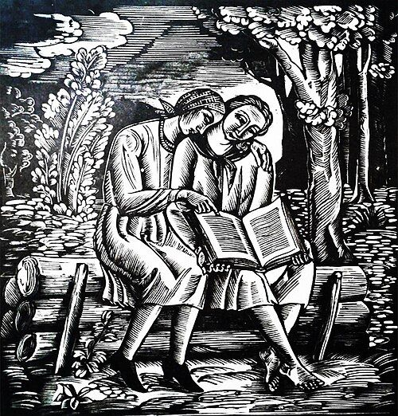
Софія Налепинська-Бойчук. «Дівчата з книжкою», 1927
Папір, дереворит. Національний художній музей України. Wikimedia Commons, суспільне надбання. Знімок 500 пікселів.
Джерело: сторінка файлу · знімок: Софія Налепинська-Бойчук · права: Public domain · підпис на сторінці: «Налепинська-Бойчук Софія Олександрівна «Дівчата з книжкою». Папір, дереворит. 1927 Національний художній музей України»
Побачене
- Дві дівчини сидять на колоді, схилившись головами одна до одної, і читають одну книжку. Голови торкаються, руки сходяться на сторінках — постаті замкнено в коло, і в середині кола — розгорнута книжка, найсвітліше місце аркуша.
- Малюнок — біле по чорному: чорного 55 %. Постаті світлі, тло темне, і сірого нема зовсім — півтон зроблено густотою паралельних рисок, що йдуть за формою рукава й спідниці.
- Одяг показано складками, а не узором: сорочка — довгі дуги, спідниця — віяло рисок від коліна. Видно, як тканина лежить, і не видно, що на ній вишито.
- Дерева й кущі — теж орнамент: листя білими лусочками на чорному, кожне дерево своїм штрихом.
- Обличчя спокійні, очі опущені в книжку; на глядача ніхто не дивиться.
Виміри. Чорного ≈ 55 %, білого ≈ 45 %. Книжка — у нижній правій чверті, голови — у верхній середній.
Колір із пікселів
За чим упізнають. Біла постать із паралельних рисок на чорному й нахил голів.

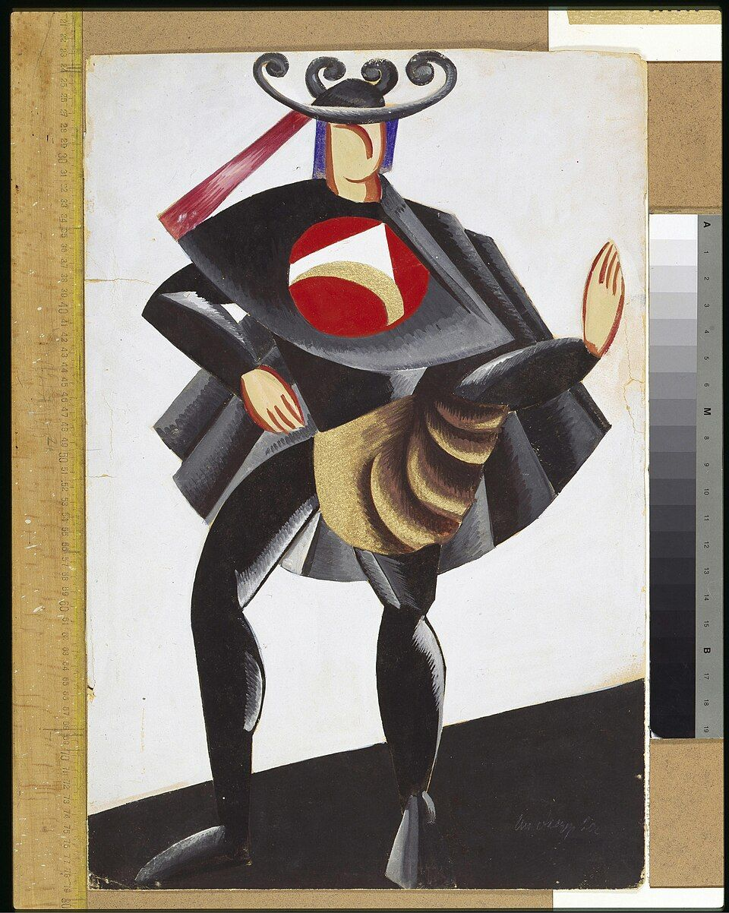
Олександра Екстер. Ескіз костюма до «Ромео і Джульєтти», 1921
Олександра Екстер (Білосток, 1882 — Фонтене-о-Роз, 1949; вчилась і працювала в Києві). Ескіз до вистави Камерного театру, 1921. Wikimedia Commons, суспільне надбання; джерело знімка — Google Arts & Culture. Техніку й розмір сторінка не називає — невідомо.
Джерело: сторінка файлу · знімок: Олександра Екстер (1882–1949) · права: Public domain · підпис на сторінці: «Sketch for costume for production of Shakespeare’s Romeo and Juliet - Aleksandra Ekster»
Побачене
- Постать на повен зріст, у русі: одна нога зігнута й винесена вбік, рука відставлена долонею до глядача. Обличчя — гладкий тілесний овал без очей і рота. Людину впізнають за позою й одягом, не за лицем.
- Одяг не «вдягнений» на тіло, а складений із площин: чорні клини плаща розходяться віялом від плечей і пояса, кожен клин відбитий сірим ребром. Тіло під ним теж чорне, тож постать — одна темна пляма зі складною межею.
- На всю постать одне яскраве місце: червоне коло з білим клином на грудях (≈ 2 % аркуша). Друге, тепле й тихіше, — смугастий золотавий рукав-буф на стегні. Решта — чорне, сіре й білий папір.
- Підлога — чорний клин навскіс у нижній п'ятій частині аркуша: постать стоїть не на лінії, а на площині, і та площина нахилена.
- Поруч на знімку лежить музейна сіра шкала — видно, що аркуш знімали як річ, з берегами картону.
Виміри. Постать ≈ 85 % висоти аркуша; чорного 27 %, білого паперу 32 %, червоного ≈ 2 %; підлога — нижні ≈ 20 %, навскіс.
Колір із пікселів
За чим упізнають. Чорна постать із віял-клинів без обличчя, з одним червоним колом на грудях.

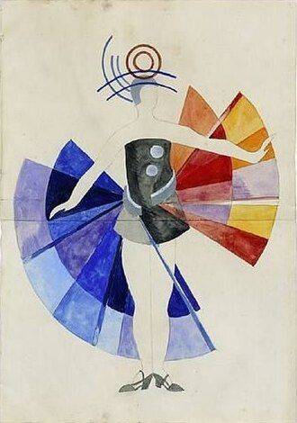
Олександра Екстер. Ескіз костюма до фільму «Аеліта», 1924
Олександра Екстер. Олівець, колаж, гуаш на папері, 1924. Georgia Museum of Art, University of Georgia; Wikimedia Commons, суспільне надбання. Джерело мале: 331 × 471 пікселів — дрібного не видно.
Джерело: сторінка файлу · знімок: Олександра Екстер (1882–1949) · права: Public domain · підпис на сторінці: «Costume Design for 'Aelita' by Alexandra Exter, 1924, pencil, collage and gouache on paper, Georgia Museum of Art, University of Georgia»
Побачене
- Тіло — тонкий олівцевий обрис, майже порожній. Уся барва — у спідниці: це два віяла з клинів, що розходяться від пояса. Ліве — холодне: сині, фіалкові, блакитні клини; праве — тепле: червоні, жовтогарячі, жовті, між ними один бузковий.
- Клини різної ширини й насиченості, найтемніші сині — при самому тілі, найсвітліші — зовні. Одяг показано як розкладену палітру: видно, з яких кольорів він складається і скільки якого.
- Ліф — чорна пляма з двома сірими кружалами; голова — кілька червоних кіл одне в одному з синіми дугами. Обличчя нема зовсім.
- Рука простягнута вбік понад теплим віялом; ноги — дві лінії, що сходяться в чорні туфлі. Тло — порожній папір (67 % аркуша).
Виміри. Папір 67 %; сині й фіалкові клини разом ≈ 20 %; теплі ≈ 8 %; чорний ліф ≈ 3 %. Клинів — близько дев'яти в кожному віялі.
Колір із пікселів
За чим упізнають. Постать-лінія, а спідниця — віяло клинів: з одного боку сині, з другого вогняні.

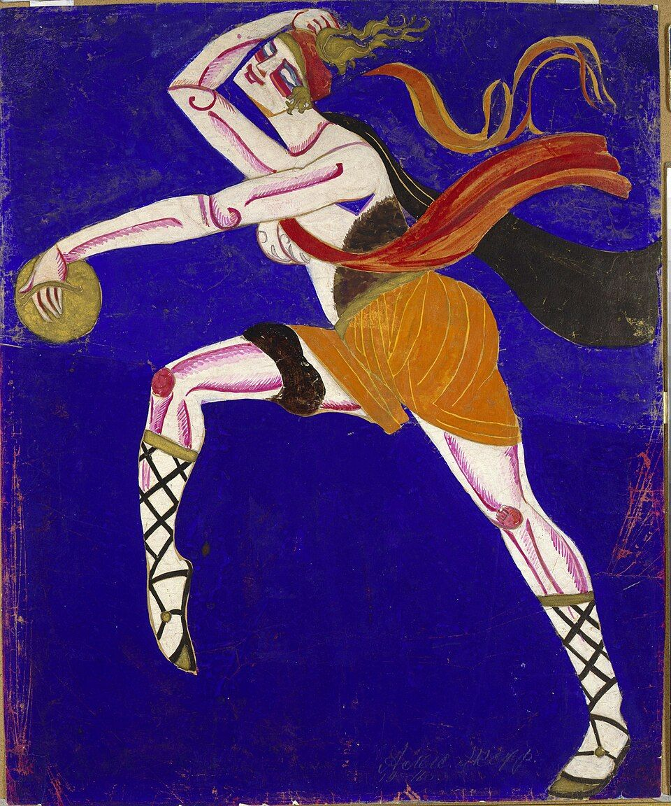
Олександра Екстер. Ескіз костюма вакханки до «Фаміри Кіфаред», 1916
Олександра Екстер. Ескіз до вистави Камерного театру за п'єсою Інокентія Анненського, 1916. Wikimedia Commons, суспільне надбання; джерело знімка — Google Arts & Culture. Техніку й розмір сторінка не називає.
Джерело: сторінка файлу · знімок: Олександра Екстер (1882–1949) · права: Public domain · підпис на сторінці: «Sketch for Bacchante costumeI Annensky’s Famira Kifared Thamira Khydaredes - Aleksandra Ekster»
Побачене
- Тло — суцільний ультрамарин (#1C0770, майже половина аркуша). На ньому постать світиться: тіло біле з теплим відтінком, і по шкірі йде орнамент — костюм намальовано просто на тілі.
- Спідниця жовтогаряча, шарф червоно-бурий і летить дугою за спиною: тканина показує рух, якого в самій позі небагато.
- Три барви — синє, біле, жовтогаряче — узяті в повну силу й ніде не змішані. Тут протилежне до тихого рушника: тло гучніше за постать, і тримається це лише тому, що постать найсвітліша.
Виміри. Синє тло ≈ 67 % (два відтінки); тіло ≈ 9 %; жовтогаряче ≈ 9 %.
Колір із пікселів
За чим упізнають. Біла постать із жовтогарячою спідницею на густо-синьому.
.jpg){kind=link}
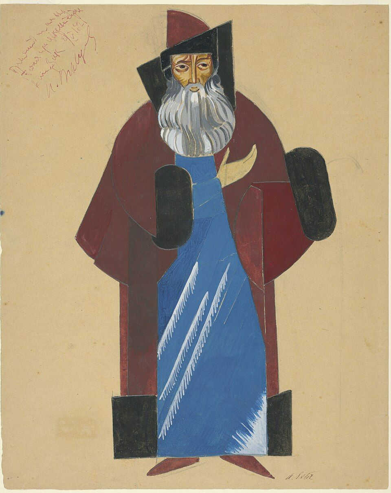
Олександра Екстер. Ескіз костюма боярина, 1921
Олександра Екстер, 1921. Cooper Hewitt, Smithsonian Design Museum (інв. 18797659); Wikimedia Commons, суспільне надбання. Опис музею: сивобородий старий у довгій синій ризі й бордовій шубі та шапці з чорною облямівкою, одна рука піднята до грудей.
Джерело: сторінка файлу · знімок: Олександра Екстер (1882–1949) · права: Public domain · підпис на сторінці: «Russian Constructivist-style costume design of grey-bearded old man in long blue robe and maroon coat and hat with black (fur?) trim. One up-turned hand is raised across figure's chest.»
Побачене
- Постать стоїть прямо й займає аркуш майже до країв. Одяг — три пласкі плями: синя риза з білими навскісними штрихами, бордова шуба, чорні манжети й комір. Жодної тіні — об'єм дає лише штрих по синьому.
- Папір бежевий, нефарбований, і він — третина аркуша. Обличчя намічене кількома лініями, борода сіра.
- Шуба ширша за ризу й обгортає її з боків: верхній шар показано як рамку довкола нижнього. Це стрій із трьох шарів, намальований трьома плямами.
Виміри. Папір ≈ 60 %; бордове 22 %; синє 11 %; сіре 4 %.
Колір із пікселів
За чим упізнають. Три пласкі плями одягу — синя, бордова, чорна — на голому папері.

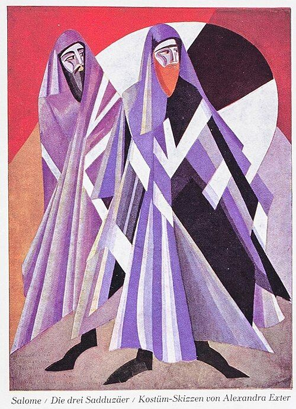
Олександра Екстер. «Саломея», три саддукеї. Ескізи костюмів
Олександра Екстер; відтворено в книжці Рудольфа Курца «Expressionismus und Film» (Берлін, 1926), сторінка називає дату «1926 або раніше». Wikimedia Commons, суспільне надбання. Знімок 668 × 921.
Джерело: сторінка файлу · знімок: Олександра Екстер (1882–1949) · права: Public domain · підпис на сторінці: «Deutsch: Alexandra Exter - Salomé, Die drei Sadduzäer. Kostüm-Skizzen aus File:Rudolf Kurtz - Expressionismus und Film. Berlin, 1926.jpg»
Побачене
- Три постаті стоять упритул, і шати кожної — це прямовисні грані: бузкова, біла, чорна, знов бузкова. Тканина не лягає складками, а ламається площинами, як папір.
- Обличчя малі, темні, майже однакові. Трьох розрізняють за тим, як чергуються грані одягу, а червоне з'являється лише вузькими клинами між ними.
- Барв чотири: бузкова двох тонів, біла, чорна, червона. Найбільше бузкової.
Виміри. Бузкове (три тони) ≈ 50 %; біле 21 %; червоне 15 %; чорне 13 %.
Колір із пікселів
За чим упізнають. Три постаті, чиї шати — прямовисні бузкові, білі й чорні грані.
_by_shakko.jpg){kind=link}
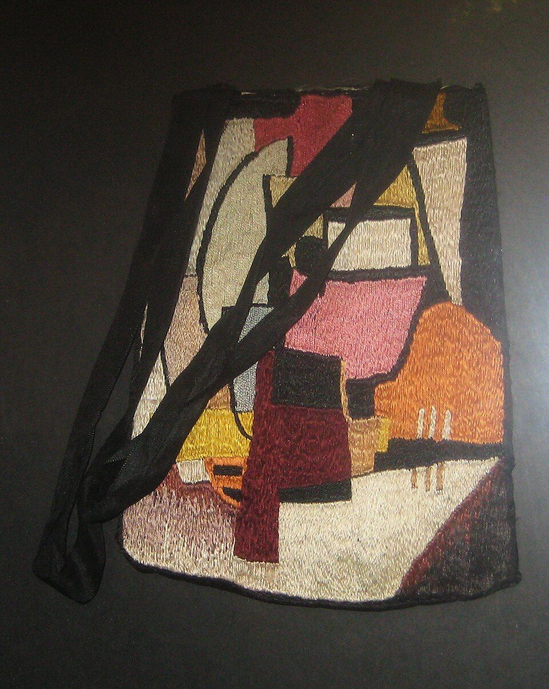
Сумка за ескізом Олександри Екстер (1915)
Знімок: Shakko, 2010-ті, Wikimedia Commons, суспільне надбання. Підпис сторінки: «Сумка за ескізом О. Екстер (1915). Приватна колекція. Виставка в галереї „Проун“». Хто й коли вишив — сторінка не називає.
Джерело: сторінка файлу · знімок: Shakko · права: Public domain · підпис на сторінці: «Сумка по эскизу А. Экстер (1915). Частная коллекция. Выставка в галерее "Проун".»
Побачене
- Це річ, яку носили: трапеція з довгим чорним ременем. Усе лице сумки вишите гладдю впритул, без голого тла: рожева, жовтогаряча, бордова, вершкова, вохриста площини, відбиті чорними смужками.
- Малюнок — не узор і не квітка, а кубістична композиція: дуги, прямокутники, навскісні зрізи. Напрям стібків у кожній площині свій, тож сусідні плями одного кольору відрізняються блиском.
- Найбільша пляма — вершкова, найяскравіші — рожева й жовтогаряча посередині. Чорне лише ділить.
- Авангард тут зроблено тими самими руками й тією самою гладдю, що й народну вишивку (Екстер працювала з майстринями села Вербівка); на сумці це видно без пояснень.
Виміри. Лице сумки зайняте вишивкою на 100 %; чорні смуги-межі ≈ 10 % площі.
Колір із пікселів
За чим упізнають. Сумка-трапеція, суцільно вишита пласкими кольоровими площинами з чорними межами.

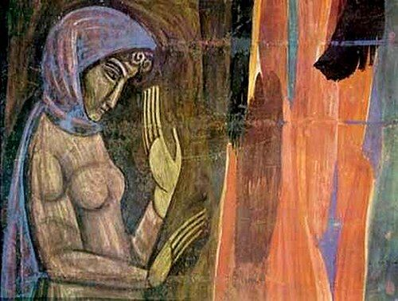
Михайло Бойчук. «Дівчина», бл. 1915
Михайло Бойчук (Романівка, 1882 — Київ, 1937). Близько 1915. Wikimedia Commons, суспільне надбання; джерело — WikiArt, 600 × 455. Техніку й збірку сторінка не називає.
Джерело: сторінка файлу · знімок: Mykhailo Boychuk (1882-1937) · права: Public domain · підпис на сторінці: «A Girl»
Побачене
- Профіль дівчини в бузковій хустці, голова схилена, руки підняті до грудей. Лице й руки ліплені не тінню, а довгими рівнобіжними штрихами — так само, як у дереворитах його школи.
- Постать притиснута до лівого краю й обрізана: бачимо голову, плечі й руки, решти нема. Праворуч — жовтогарячі стовбури, що стоять прямовисно, як завіса.
- Барв мало й вони землисті: бура, цегляна, сіро-бузкова. Яскравого нема зовсім — тихіше за будь-що в Екстер.
Колір із пікселів
За чим упізнають. Схилений профіль у хустці, виліплений штрихом, на тлі прямих стовбурів.

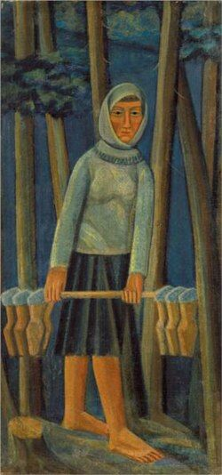
Михайло Бойчук. «Молочниця», 1915
Михайло Бойчук, 1915. Wikimedia Commons, суспільне надбання; джерело — WikiArt, 281 × 600: копія мала, дрібного не видно.
Джерело: сторінка файлу · знімок: Mykhailo Boychuk (1882-1937) · права: Public domain · підпис на сторінці: «Milkmaid»
Побачене
- Вузький стоячий аркуш (1 : 2), і жінка стоїть у ньому на повен зріст, фронтально, як свята на іконі. На плечах коромисло, під ним — ряд глечиків.
- Постать — це стовп із двох плям: сіро-блакитна блуза вгорі, темна спідниця внизу. Довкола — стовбури, такі самі прямі.
- Усе темне й оливкове; найсвітліше — лице й руки.
Виміри. Аркуш ≈ 1 : 2,1; постать — на всю висоту, посередині.
Колір із пікселів
За чим упізнають. Жінка-стовп із коромислом на вузькому високому аркуші.

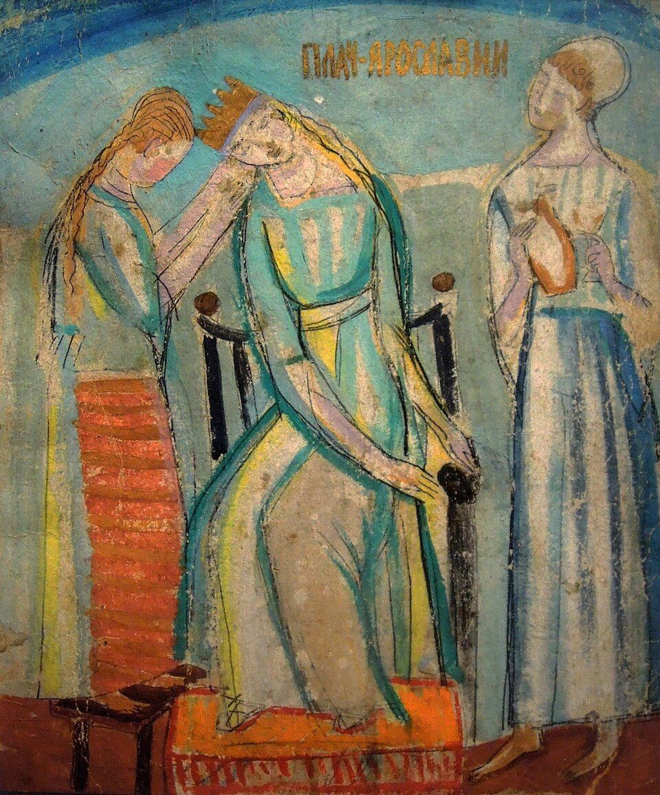
Михайло Бойчук. «Плач Ярославни», поч. 1910-х
Михайло Бойчук, початок 1910-х. Факсиміле; знімок — власна репродукція автора завантаження, Wikimedia Commons, CC BY-SA 4.0. Техніку й збірку сторінка не називає.
Джерело: сторінка файлу · знімок: Mychajło Bojczuk (1882-1937) · права: CC BY-SA 4.0 · підпис на сторінці: «Mychajło Bojczuk - Płacz Jarosławny; faksymile English: Mykhailo Boychuk - Yaroslavna's Lament; facsimile»
Побачене
- Назву написано в самій картині — «ПЛАЧ ЯРОСЛАВНИ» уставними літерами, як напис на іконі чи підпис у «Мамаї». Письмо — частина зображення, а не підпис під ним.
- Барви — приглушена бірюза й жовтогаряче на вохрі; обриси м'які, площини пласкі.
- Постать і будівля однакового зросту: простір не глибокий, а складений поверхами, як у мініатюрі Пересопницького Євангелія.
Колір із пікселів
За чим упізнають. Пласка «іконна» сцена з назвою, написаною уставом у самій картині.
Олександр Богомазов. Без назви (три постаті), 1914
Олександр Богомазов, 1914. сторінка джерела · зображення. Права: Art Institute of Chicago не позначає твір вільним — лише посиланням.

Три постаті йдуть аркушем, і кожну зроблено п'ятьма-сімома вугільними клинами: дужка голови, вертикаль спини, трикутник спідниці чи поли пальта. Контуру нема, облич нема — є тільки постава й обрис одягу, і цього досить, щоб розрізнити вузьку спідницю, довге пальто й накидку з коміром. Так бачить стилістка: спершу силует, потім річ. Папір сіро-жовтий, дві третини аркуша порожні.
Казимир Малевич. «Живописний реалізм футболіста — барвисті маси в четвертому вимірі», 1915
Казимир Малевич, 1915. сторінка джерела · зображення. Права: Art Institute of Chicago не позначає твір вільним — лише посиланням.

Біле поле займає 84 % полотна. На ньому вісім плям, і вони йдуть згори донизу від великої до малої й від глухої до яскравої: фіолетово-чорний ромб (#3A2A42, 8,8 %), жовта трапеція (#DCAB03, 3 %) і чорний квадрат (2,9 %), синя смуга (#2B2784, 0,7 %), червоні прямокутник і риска (#C52D25, 0,4 %), зелений кружок (#3B8A5A, 0,1 %). Найяскравіше — найменше. Жодна пляма не стоїть рівно: усі трохи нахилені, і тому тримаються одна за одну.
Олександр Богомазов. «Портрет дружини художника», 1913
Олександр Богомазов, 1913. сторінка джерела. Права: Art Institute of Chicago не позначає твір вільним — лише посиланням.
Обличчя жінки в капелюшку — рудою сангіною на сірому папері, кількома товстими дугами; комір — одна чорна смуга штрихів. Два кольори, і другий лише там, де одяг.
Михайло Бойчук. «Портрет жінки», 1909
Михайло Бойчук, 1909. сторінка джерела. Права: суспільне надбання; не покладено, бо копія мала (405 × 480) і нового до двох інших не додає.

Лице фронтально, цілком симетричне, з великими мигдалевими очима — як на фаюмському портреті чи іконі. Жодного повороту, жодної усмішки: людина дивиться просто, як у дзеркало.
Василь Єрмілов. Обкладинка журналу «Авангард», 1929
Василь Єрмілов (1894–1968), 1929. сторінка джерела. Права: права автора ще діють (помер 1968) — лише посиланням; джерело 400 × 563.

Аркуш поділено прямовисно: ліва третина червона, права кремова. На межі — чорне коло й величезна мала літера «а», від якої праворуч ідуть чорні смуги. Одна літера — і знак, і малюнок; барв три: червона, чорна, кремова. Назву складено з тієї самої літери, що править за картинку.
Василь Єрмілов. Обкладинка «Українське малярство. Василь Єрмілов», бл. 1930
Василь Єрмілов, бл. 1930. сторінка джерела. Права: права автора ще діють — лише посиланням; джерело 327 × 441.

Жовтогарячий прямокутник на дві третини аркуша, упоперек нього — синьо-чорна смуга; ім'я рублене, розрідженими літерами над і під смугою, а «УКРАЇНСЬКЕ МАЛЯРСТВО» поставлено сторч уздовж правого краю. Усе тримається на двох плямах і двох напрямках письма.
Василь Єрмілов. «Арлекін», 1924
Василь Єрмілов, 1924. сторінка джерела. Права: права автора ще діють — лише посиланням.

Рельєф із фарбованого дерева: на темно-вишневій дошці — постать, зведена до трьох накладених площин: жовта вигнута, червона й чорна смуга з малим жовтогарячим колом. Постать зібрано, як столяр збирає річ: кожна площина — окрема дощечка зі своєю товщиною, і межу між ними дає тінь.
Візуальний сенс
- Від авангарду на екран переноситься не «геометрія», а дві речі, які стосуються одягу. Перша — постать як кілька клинів (Богомазов): силует без обличчя й без деталей. Друга — закон плям (Малевич): велика глуха, середня, мала яскрава на великому білому.
- Дереворит бойчукістів дає третє: тон без сірого, самою густотою риски. Це споріднене з вишивкою однією ниткою й білою сіткою писанки.
- Супрематичні квадрати як оздоба — найкоротший шлях до плаката: без білого поля й нахилу вони стають значками.
- Екстер додає до Богомазова й Малевича головне для продукту про одяг: у її ескізах постать складено з площин кольору самого одягу. Обличчя нема; людину читають за позою й тим, як розходяться клини. «Аеліта» показує це впрост — спідниця є розкладеною палітрою.
- У кожному ескізі одна гучна пляма на всю постать (червоне коло — 2 % аркуша) або, навпаки, гучне тло й світла постать. Обох разом нема.
- Бойчук — протилежний полюс того самого: постать-стовп, фронтально або в чистий профіль, землисті барви, штрих замість тіні, назва в самій картині. Це ближче до ікони й «Мамая», ніж до авангарду.
- Єрмілов — письмо як картинка: одна літера чи два напрямки рядка замість ілюстрації.
Функціональний сенс для Люстерка
- Палітра. Малевич відповідає на питання, скільки якого кольору: глухого великого — дев'ять частин, середнього — три, яскравого — менше однієї. Так само складено стіну земства (рожева цеглина — кожна дванадцята). Палітру образу можна показувати плямами за площею речі: пальто, сумка, помада.
- Образ із речей каталогу. Силует Богомазова — спосіб показати образ до того, як підібрано речі: спершу обрис (вузько — широко, довго — коротко), потім фото. Це ще й чесне чекання: силует з'являється першим.
- Розмова. Дві голови над однією книжкою — це й є люстерко: жінка й стилістка дивляться не одна на одну, а разом на те саме.
- Образ до фото (чекання збирання). Поки стилістка шукає речі, на екрані може стояти постать, складена з клинів у кольорах того, що вже обрано, — як спідниця «Аеліти». Вона чесно каже: кольори вже є, речей іще нема. Кут клина — скільки місця річ займає в образі.
- Палітра на постаті, а не рядком. Замість смужки зразків кольору — ті самі кольори на силуеті: велике й тихе при тілі, мале й яскраве зовні чи на грудях. Так видно не лише «які кольори», а й «де вони на мені».
- Сумка 1915 року показує, що це не лише мова екрана: авангардну композицію вишили гладдю на речі. Для каталогу це довід, що «українське» в аксесуарі може бути площиною кольору, а не орнаментом.
Перенесення поруч зі взірцем
палітра образу: чим менша пляма, тим яскравіша
Палітра образу плямами
зі взірця: Малевич, «Живописний реалізм футболіста», 1915 — посиланням
- Площі шести плям — із полотна Малевича 1915 року (посиланням): 8,8 : 3 : 2,9 : 0,7 : 0,4 : 0,1 на білому. Кольори — з пікселів.
- У продукті плями — кольори речей образу, а площа — скільки місця річ займає на людині. Нахилу й розташування з картини не взято: це вже був би Малевич, а не палітра.
образ до фото: постать, складена з кольорів обраних речей
Постать-віяло: образ із кольорів обраних речей
зі взірця: Олександра Екстер. Ескіз костюма до фільму «Аеліта», 1924
- Будову взято з ескізу до «Аеліти»: тіло — лінія, одяг — два віяла клинів від пояса; ліворуч холодне й велике, праворуч тепле й мале. Барви — з пікселів ескізу.
- У продукті клин — це річ з образу, його кут — частка речі в образі. Постать з'являється одразу, щойно обрано кольори, і поступається місцем фото, коли речі знайдено.
- Це схема з вимірів, не рука Екстер: клини в неї різної довжини, просвічують і накладаються. Гарним це зробить художниця.
Чого не брати
- Чорний квадрат, червоний клин і косі смуги як стиль: це плакат про авангард.
- Обличчя «під Бойчука» в ілюстраціях.
- Яскраві великі площини: в усіх роздивлених творах яскравого найменше.
- Гучне синє тло «вакханки» під фото одягу: воно тримається лише на білій постаті.
- Обличчя-овал без рис як аватар жінки: в ескізі це знак костюма, на екрані про неї — це було б стирання людини.
- Червону смугу й велику літеру Єрмілова як заставку: це впізнається як радянський конструктивізм загалом.
Золото й емаль
золото — поле, а не лінія; двоє обабіч осі
Що було в текстах. У показі «Полотно й нитка» є змінна `--золото`, названа «скіфсько-мозаїчним»: тонкі золоті лінії й акценти. Зведення віднесло її до прикрас, які нічого не несуть, і відкинуло. Жодного золотого предмета тексти не називали.
Чого там не видно. Якого кольору давнє золото, скільки його в речі і що на ньому стоїть.

Колт із двома птахами обабіч дерева життя, Київська Русь, бл. 1000–1200
Скронева підвіска; золото, срібло, перегородчаста емаль; 5,3 × 5 см. The Metropolitan Museum of Art, 17.190.679, Open Access. Майстер невідомий.
Джерело: сторінка файлу · знімок: The Metropolitan Museum of Art · права: CC0 (Open Access, суспільне надбання) · підпис на сторінці: «Kyivan Rus’. Gold, silver, and enamel worked in cloisonné. 5.3 × 5 × 1.5 cm. The Metropolitan Museum of Art, 17.190.679»
Побачене
- Золото тут — тло. Гладке, порожнє, воно займає близько чотирьох п'ятих диска; на ньому, як на аркуші, стоять три фігури. Тонких золотих ліній-прикрас нема: лінії — це перегородки між барвами всередині фігур.
- Колір золота — блідий, солом'яний (#CFB776, у світлі #EBD593, у тіні #B49E65), матовий. Він ближчий до небіленого льону, ніж до жовтого.
- Два птахи стоять дзеркально, дзьобами до дерева посередині. Тіло — темно-синє, майже чорне, всіяне жовтими цятками; крило й хвіст — зелене з цегляно-червоним і білим. Барв п'ять, і кожна — малими комірками.
- Лапи птахів не залито емаллю: їх лише обведено червоним по золоту. Найлегше місце фігури — там, де вона торкається землі.
- Диск не круглий: згори виїмка півмісяцем і дужка на двох завісах. Річ висіла біля скроні, по одній з кожного боку обличчя — сама була парою.
- Посередині дірка, емаль місцями випала. Видно, що під барвою — те саме золото.
Виміри. По ширині диска: край 13 %, птах 27 %, дерево 15 %, птах 27 %, край 13 %. Емалі — близько п'ятої частини площі.
Колір із пікселів
За чим упізнають. Двоє обабіч одного, дзеркально, на порожньому світлому диску з виїмкою.

Колт із двома сиринами обабіч дерева життя, Київська Русь, ХІ–ХІІ ст.
Скронева підвіска; золото, перегородчаста емаль; 6 × 5,7 см. The Metropolitan Museum of Art, 17.190.680, Open Access. Майстер невідомий.
Джерело: сторінка файлу · знімок: The Metropolitan Museum of Art · права: CC0 (Open Access, суспільне надбання) · підпис на сторінці: «Kyivan Rus’. Cloisonné enamel, gold. 6 × 5.7 × 1.4 cm. The Metropolitan Museum of Art, 17.190.680»
Побачене
- Та сама будова: двоє дзеркально, між ними паросток. Тут у птахів жіночі обличчя в німбах, і вони дивляться не одна на одну, а на глядача.
- Хвости довгі, загнуті назовні, як дужки, — вони замикають композицію знизу. Дерево зведено до знака: тризуб із завитками і трикутник під ним.
- Порожнього золота ще більше, ніж на колті з птахами; диск пом'ятий, і вм'ятини видно як тіні на рівному полі.
Колір із пікселів
За чим упізнають. Обличчя в колі, повторене двічі. Найближче до «люстерка» з усього, що знайшлось: одне лице й друге таке саме навпроти.

Ланцюг із бляшок із птахом і геометричним узором, Київська Русь, 1000–1200
Прикраса вбрання; золото, перегородчаста емаль; 11,6 × 2,4 см. The Metropolitan Museum of Art, 17.190.681, Open Access. Майстер невідомий.
Джерело: сторінка файлу · знімок: The Metropolitan Museum of Art · права: CC0 (Open Access, суспільне надбання) · підпис на сторінці: «Kyivan Rus’. Cloisonné enamel, gold. 11.6 × 2.4 × 0.5 cm. The Metropolitan Museum of Art, 17.190.681»
Побачене
- Три круглі бляшки на завісах: узор — птах — узор. Геометричні бляшки однакові: коло з трилисником у центрі, чотири трикутники навхрест і чотири цятки між ними. Птах стоїть між ними, як слово між двома розділовими знаками.
- Завіса між бляшками — видима частина речі: два вушка й штифт. Ланцюг гнеться саме там.
Колір із пікселів
За чим упізнають. Ритм «знак — образ — знак» з круглих однакових ланок.
Візуальний сенс
- Давнє золото красиве тим, що його багато й воно порожнє. Це тло, тепле й бліде, а не тонка блискуча лінія. Відкинуте в показі «золото» було якраз лінією.
- Барва на золоті — малими комірками, і її п'ята частина. Найтемніше (синє) стоїть поруч із найсвітлішим (жовті цятки), тому фігуру видно з відстані руки.
- Композиція — дзеркало: двоє однакових обабіч осі. Вісь не порожня — на ній росте дерево.
- Гине, коли золото роблять блискучим градієнтом або тонким контуром: тоді це вже подарункова упаковка.
Функціональний сенс для Люстерка
- Двоє обабіч осі — готова форма для сумніву й заміни: річ, що є в образі, і та, що пропонують замість неї, стоять дзеркально, а між ними — те, заради чого вибирають (нагода). Те саме для «купити чи ні»: річ із крамниці навпроти тієї, що вже є в шафі.
- Дзеркальна пара — пряма мова назви продукту: люстерко показує друге таке саме навпроти. Цього не було в жодній із шести робіт.
- Бліде золото як тло — для одного стану, а не для всього продукту: те, що жінка зберегла. Солом'яний колір близький до льону й поруч із фото одягу не кричить.
- Ланцюг «знак — образ — знак» — порядок для збережених образів: між образами стоять однакові тихі ланки, і стрічка не зливається.
Перенесення поруч зі взірцем
сумнів: річ і заміна — дзеркальна пара
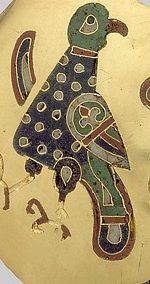
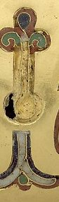
Сумнів: дзеркальна пара
зі взірця: Колт із двома птахами обабіч дерева життя, Київська Русь, бл. 1000–1200
- Птах і дерево — вирізки зі знімка колта; правий птах — дзеркальне відбиття лівого. Тло — колір його золота з пікселів, пропорції по ширині — з диска.
- На місці птахів стоять дві речі з каталогу, на місці дерева — нагода або те, з чим річ носитимуть.
- Чого бракує: фото двох різних речей не дзеркальні. Треба перевірити на справжніх парах, чи тримає вісь композицію, коли обабіч неї різне.
Чого не брати
- Тонкі золоті лінії й золотий текст: на колтах золото — поле.
- Яскраво-жовте чи градієнт «під метал»: золото на знімках солом'яне й матове.
- Сиринів і святих як мотив: це церковне й княже, а не щоденне.
Люстерко як річ
лице порожнє; оздоба — на ручці й на звороті
Що було в текстах. Люстерко в роботах — метафора («стилістка показує, а не судить», Сковорода, «пізнай себе»). Про саму річ: Gemini згадує гутне фацетоване люстерко XVII–XVIII ст. і бере з нього «світлову грань» в один піксель; Claude чесно пише, що гуцульських дзеркалець на одязі «не знайдено надійно». Жодного дзеркала не показано.
Чого там не видно. Як виглядає ручне дзеркало, яке справді тримали в руках на цій землі, і де на ньому оздоба.
Не знайдено. Народного люстерка ХІХ — початку ХХ ст. (гуцульського різьбленого, у рамці з мосяжем, дзеркалець на одязі чи весільному вінку) з музейним описом і зображенням не знайшла: пошук у museum-digital (Київ, Закарпаття) за словами «люстерко» й «дзеркало», пошук у мережі, Wikimedia Commons («Hutsul mirror»), Метрополітен-музей і Чиказький інститут. Гутного фацетованого люстерка, яке згадує Gemini, теж не знайшла — «світлова грань» лишилась неперевіреною. Обидва роздивлені дзеркала — археологія, а не народний побут.
Дзеркало з ручкою й фігуркою пантери. Кургани біля Ромен на Сумщині, VI ст. до н. е.
майстер невідомий; розкопки Сергія Мазаракі, кінець ХІХ ст., VI ст. до н. е.. сторінка джерела · зображення. Права: Національний музей історії України, CC BY-NC-SA — некомерційна ліцензія, тому лише посиланням.

Бронза, лиття; 324 × 181 мм. Диск із піднятим бортиком займає трохи більше половини висоти, і він зовсім гладкий: на лиці нема жодної лінії — лише плями патини. Уся оздоба зійшла вниз, у руку: ручка з поздовжніми жолобками, на її кінці — маленька пантера, що стоїть на підставці. Ручка тонка, десь сьома частина ширини диска, і прикріплена до нього округлою накладкою. Колір — тепла тьмяна бронза (#A58970, у тіні #887563). Найменша й найвигадливіша частина речі — та, якої не видно, коли в дзеркало дивляться.
Бронзове дзеркало китайської роботи із сарматського поховання
невідомо, дату з опису музею не виписала. сторінка джерела · зображення. Права: Національний музей історії України, CC BY-NC-SA — лише посиланням.

Знято зворот: діаметр 98 мм, посередині шишка-петля, довкола — кільця з зубцями й пояс знаків. Музей перекладає напис по колу: «Внутрішній бік чистий, і тому відбиває світло». Знову те саме: лице чисте, а слова й узор — на звороті й по краю. Річ привізна; взірцем української роботи її вважати не можна — лише взірцем того, як дзеркало збудоване.
RUDA, Sun Mirror; Oberig, каблучка-печатка зі знаком 114
RUDA; Тетяна Войтович (Oberig), 2023; невідомо. сторінка джерела. Права: див. аркуш «Як це вже переносили».
Обидві речі описано на аркуші сучасних робіт: там дзеркало — диск із променями, знак — на малій площині печатки.
Візуальний сенс
- У справжньому дзеркалі лице порожнє за визначенням: зображення приносить та, хто дивиться. Оздоба живе на ручці, на звороті й по краю — там, де рука, і там, де видно, коли дзеркало лежить.
- Для продукту з назвою «Люстерко» це найпряміша підказка з усього альбому: середина екрана належить фото жінки й образу, а все «українське» має сидіти по краю, в ручці й на звороті — на першому екрані, у смузі внизу, на картці, яку відкладено.
Функціональний сенс для Люстерка
- Знайомство й фото. Диск із бортиком — рамка для фото; ручка — те, за що продукт «тримають»: назва й одна дія.
- Збережені образи. Зворот дзеркала: коли образ відкладено, видно не його, а зворот — узор і напис по колу. Перевернула — побачила.
- Відгук словами. Напис на звороті каже, що дзеркало лише відбиває. Тон стилістки — той самий: показує, а не судить (це вже було в роботах як слова; тут воно написане на речі).
Перенесення поруч зі взірцем
знайомство: диск і ручка
Диск і ручка
зі взірця: дзеркало з-під Ромен, VI ст. до н. е. — посиланням
- Пропорції — з музейного опису дзеркала з-під Ромен (324 × 181 мм) і з його знімка: диск 56 % висоти, ручка — сьома частина ширини диска. Колір бортика — бронза з пікселів.
- Обрису пантери не прорисовано: знімок має некомерційну ліцензію, а без руки художника це була б наліпка. На її місці — порожній квадрат для знака.
Чого не брати
- Рамку з орнаментом довкола фото: у дзеркала бортик гладкий.
- Блиск, відблиски й «скляні» градієнти: бронзове дзеркало тьмяне.
- Пантеру, оленя чи грифона як талісман продукту без художника.
Як це вже переносили
сучасні українські роботи — лише посиланням, права авторів діють
Що було в текстах. Усі чотири роботи називали сучасні бренди й шрифти (Banda, Gunia, Bevza, Baginskiy, шрифти за Нарбутом і скорописом, «Національні парки») як доказ, що українське можна перенести без шароварщини. Зображень не було; Claude наводив Нову пошту × Etnodim «Взори» як приклад, чого уникати.
Чого там не видно. Що саме ці роботи взяли з першоджерела, а що відкинули, — і чи лишилось у них щось, окрім мотиву.
Brun'ka — косметика (рушник)
Gutsulyak.Studio (Юрко Гуцуляк), Київ, 2017. сторінка джерела · зображення. Права: права студії діють — лише посиланням.

Білий тюбик, на ньому одна червона фігура — «вазон» із квіткою, птахами й цятками, намальований рівною лінією; під нею дрібний сірий напис. Червоного — приблизно десята частина поверхні, решта біла. Узято з рушника те саме, що видно на кролевецькому взірці: одна фігура й багато порожнього. Відкинуто тканину: лінія гладка, без східців і без просвітів — тому це знак, а не рушник.
Національні парки України: закодована айдентика (вишивка)
Saatchi & Saatchi Ukraine, концепт Коста Шнайдер, 2018. сторінка джерела · зображення. Права: права агенції діють — лише посиланням.

На темному нічному фото в ряд стоять дев'ять «дерев», складених із квадратиків-хрестиків: кожне іншої висоти, ширини й барв, під ними ламана лінія з тих самих квадратиків. Від вишивки взято одиницю — хрестик — і правило «фігура з клітинок на осі». Барви неонові, на чорному: тут уже нічого від полотна. Працює те, що знак щось означає (у кожного парку свій), а не те, що він «народний».
Gunia Project — блузи за наївними рушниками з Музею Гончара
Gunia Project (Наталія Каменська, Марія Гаврилюк), 2025. сторінка джерела · зображення. Права: права бренду й видання діють — лише посиланням.

Дві білі блузи; вишивка чорною лінією лише на рукавах — місяць, зірки, рука з гілкою, — стан порожній, на одній ще маленький бантик на кишені. Те саме правило, що на сорочках із Музею Гончара: одна нитка, оздоба на рукаві. Малюнок узято не з орнаменту, а з наївних рушників: він оповідний, нерівний, «від руки».
Ruslan Baginskiy, TSVIT — золотий вінок довкола обличчя
Ruslan Baginskiy, знімки Synchrodogs, рік сторінка не називає. сторінка джерела · зображення. Права: права бренду й фотографів діють — лише посиланням; на знімку людина.

Усе чорне — гольф і каптур, — і лише довкола обличчя щільний вінок із золотих квітів. Золото стоїть там само, де колт: при скроні, обрамлюючи лице. Тло — небо від блакитного до бузкового. Сильне тим, що прикраса одна й знає своє місце.
Klynok — шрифтова система за скорописом
Катерина Корольовцева (ESAD Amiens), рік сторінка не називає. сторінка джерела · зображення. Права: права авторки діють — лише посиланням.

Заголовкове накреслення — дуже вузьке й високе, літери стоять щільно й заходять одна в одну («ІВАН МАЗЕПА» зібрано в одну пляму), кінці штрихів гострі, клинцем; у «У» й «р» довгі хвости під рядок. Поруч текстове накреслення — спокійна антиква — і курсив із живим нахилом. Зі скоропису взято не форми літер, а щільність і розмах, і дикість лишено тільки заголовкам. Картка — біле поле в скошеній малиновій рамці на чорному.
Zakon — «національний шрифт» (Нарбут, Кричевський)
Олексій Чекаль, Геннадій Заречнюк, Дмитро Растворцев, Андрій Шевченко, 2026. сторінка джерела · зображення. Права: права авторів і видання діють — лише посиланням.

Жовті літери на синьому: антиква з упізнаваними нарбутівськими рисами — «к» із піднятою гілкою, «у» з завитком, «й» із прапорцем угорі; окремі літери винесено в кола як зразки. Шрифт тихий і діловий; гучне тут — державні жовте й синє, а не літери.
Olkom — упаковка масла й пасти (петриківка)
Gutsulyak.Studio (Юрко Гуцуляк), 2020. сторінка джерела · зображення. Права: права студії діють — лише посиланням.

Дві пачки — бірюзова й темно-синя; білим по одному кольору — вінок із «цибульок» і пір'їстих листків довкола червоного овалу з назвою, написи йдуть по колу. Від розпису взято мазок-краплю й симетрію, барви зведено до однієї плюс біла. Стримано; але вінок суцільний, порожнього майже нема.
Kaniv 1971 — упаковка сирів (Примаченко)
Grape, творча директорка Оксана Деньга, ілюстраторка Ольга Чарук, 2022. сторінка джерела · зображення. Права: права агенції діють — лише посиланням.

П'ять пачок, кожна залита одним густим кольором — зеленим, фіалковим, жовтим, синім, оранжевим; посередині симетричний букет із двома птахами обабіч квітки, зверху важкий чорний напис. На полиці це голосно й весело. Поруч із фото одягу такі барви неможливі: кожна пачка сама як сукня.
Дзеркало «Сонце» — соломка
RUDA Studio (Олександра Руденко), 2023. сторінка джерела · зображення. Права: права студії діють — лише посиланням.

Кругле люстро, тоноване в тепле золото, у вінку з нерівних променів-язиків, викладених соломкою: кожен промінь складено зі смужок під різними кутами, і вони блищать по-різному. Колір — той самий солом'яний, що в золоті колтів. Рама ширша за люстро вдвічі з кожного боку.
Дзеркало Oberig 114
Іван Войтович (oitoproducts), рік сторінка не називає. сторінка джерела · зображення. Права: права автора діють — лише посиланням.

Високе вузьке люстро на зріст у кремовій рамі; рама гладка, без жодного малюнка, і тільки її зовнішній край з обох боків іде зубцями — великими, округленими, вісім на висоту. Від народного взято один обрис — зубчастий край, як на бордюрі настільника чи подолі керсетки. Цього досить, щоб річ упізнавалась, і вона не сперечається з тим, що в люстрі.
Zluka — плакатний шрифт із тризубами на тлі
«Щедрик» (Геннадій Заречнюк, Віктор Харик), 2018. сторінка джерела · зображення. Права: права авторів діють — лише посиланням.

Не вада шрифту, а приклад подачі: важкі жовті об'ємні літери на синьому тлі, всіяному завитками-тризубами. Жовте, синє, тризуб і «козацька» брила разом — усі знаки українського одразу, і жоден не працює: це обгортка до свята. Сам шрифт (за написами Петра Холодного) тут ні до чого — так виглядає будь-що, коли впізнаваність беруть символами.
Ростова лялька «козак» на міському карнавалі. Донецьк, 2010
знімок: Andrey Butko, 2010. сторінка джерела. Права: Wikimedia Commons, GFDL; на знімку люди — лише посиланням.

Поролонова голова завбільшки з тулуб, оселедець, вуса до плечей, вишита манишка, червоні шаровари, рожевий пояс — і поруч такі самі ляльки кота й зайця на тлі реклами білизни. Усі ознаки «українського» зібрано разом і збільшено до карикатури; жодна не зроблена з матеріалу, з якого була. Це і є шароварщина: не помилка в мотиві, а мотив без речі, одразу весь набір, і однаково гучно.
Візуальний сенс
- Найсильніші роботи беруть з першоджерела одне правило, а не мотив: одна фігура й багато порожнього (Brun'ka), одна нитка на рукаві (Gunia), золото лише при обличчі (Baginskiy), один зубчастий край (Oberig), щільність письма (Klynok).
- Усі вони відкидають матеріал: лінія стає рівною, колір — плоским. Тому вони виглядають як знаки, і тому схожі між собою більше, ніж їхні першоджерела.
- Гучні барви (Kaniv, Zakon у презентації) працюють на полиці й на трибуні. Поруч із фото одягу вони займають місце речі.
Функціональний сенс для Люстерка
- Жодна з цих робіт не несе дії: це упаковка, шрифт, річ. Єдиний приклад, де народна будова щось означає, — «Національні парки»: знак складено з даних парку. Для Люстерка це прямий урок — знак із клітинок може бути складений із того, що жінка сказала, і в кожної буде свій.
- Два дзеркала показують, що «люстерко» як річ уже має сучасну українську форму: рама, ширша за скло, із соломи; або гладка рама з одним зубчастим краєм. Фото жінки в продукті — це і є скло; питання лише в рамі.
Чого не брати
- Набір символів разом (жовте й синє, тризуб, «козацький» шрифт): упізнаваність є, смаку нема.
- Густі кольорові заливки під фото одягу.
- Суцільний вінок без порожнього: у першоджерелах порожнього більше.
Висновок
що з роздивленого впізнається без слів, що має силу, що вживається з фото одягу і що робить роботу
| Напрямок | Упізнаваність без слів | Художня сила | Поруч із фото одягу | Яку роботу несе |
|---|---|---|---|---|
| Рушник | висока — довге полотно з густими кінцями й порожньою серединою; східчаста фігура | висока: повітря, наростання, підпис із роком | добре: багато порожнього, червоне припорошене (#A97975) | чекання; одна річ під «перекинутим» рушником; кінець розмови з підписом |
| Сорочка: вишивка й мережка | висока у фрагменті (рукав), середня в будові | висока: одна нитка, три густоти, порожній стан | добре: оздоба на краю, середина гола | «що я зрозуміла» у три поверхи; один другий колір — там, де її рішення |
| Плахта і стрій | середня: шари впізнає той, хто знає стрій; плахту-клітку — всі | висока: перекриття, «визирає» | добре для будови; плахта як тло — строката | образ як шари; пояс-нагода; палітра-плахта |
| Витинанка | висока: суцільний дзеркальний силует | висока в руці авторки; старої не знайдено | добре: один колір, крізь прорізи видно фото | пара зі згину; розгортання як чекання — здогад |
| Скриня; хата й сволок | висока в речі, низька на екрані; сволока не знайдено | середня: живе стертим низом і роком у серці | погано: темна й густа | збережені образи: лице й нутро; дата, коли «заведено» |
| Кераміка: кахля й піч | висока: зелене з жовтим на вершковому, рамка з крапок | висока в руці майстра (Кошак), зникає в обведенні | будова печі — добре; косівське зелене — гучне | збережені образи як піч із кахлів; каталог як гончарний ряд |
| Писанка | висока | висока, але в об'ємі й воску | погано: темне тло гасить фото | шари від світлого до темного — лише як думка для чекання |
| «Козак Мамай» | середня як розклад (без козака), висока з козаком — але це сувенір | висока: людина і її речі, кожна окремо | дуже добре: розклад без жодного мотиву | образ із речей: постать у центрі, речі довкола, слова внизу |
| Стародрук | висока з дереворитом, середня без нього | висока: вага вгорі, назва у вирізі, одне червоне | добре: фото стає «заставкою» | розклад образу; перелік «що я зрозуміла» з червоною літерою |
| Скоропис | висока в оригіналі | висока, але лише в живій руці | нейтрально | поправка над рядком; підпис замість кнопки |
| Нарбут | висока — за рукою й сірою бірюзою | висока | барви — добре; плетиво й постаті — ні | аркуш нагоди; літера й її негатив як пара станів |
| Кричевський (і «скошені кути») | висока в будівлі; меланж цегли — середня, але своя | висока: оздоба вгорі, спокій під руками | дуже добре: меланж — тло, що не сперечається | палітра муром; образ у дузі; скіс — лише у «вікні» з фото |
| Авангард і бойчукісти | низька як українське (читається як «авангард узагалі») | висока | добре: біле поле, мало яскравого | палітра плямами за площею; силует до фото; двоє над однією книжкою |
| Золото й емаль (і відкинуте «золото») | середня: бліде золото — ні, пара птахів — так | висока | добре як один стан; солом'яне близьке до льону | дзеркальна пара для сумніву, заміни, «купити чи ні» |
| Люстерко як річ | висока як форма (диск і ручка), не як українське | середня: взірці — археологія | дуже добре: лице порожнє | правило для всього: середина — фото, оздоба — на ручці й звороті |
| Відкинута «фактура зірок» (біле по білому) | у речі — так, на екрані — ні | у речі висока: це тінь і рельєф | нейтрально | жодної: без косого світла й об'єму її нема (див. житомирську й чернігівську сорочки) |
| Відкинутий «вазон» | висока — і тому сувенірна | висока в перебірному рушнику й у щипцях земства | погано як картинка | жодної як значок; як вісь, обабіч якої стоїть пара, — так (колти, кахля) |
| Сучасні роботи | висока, але як «сучасний український бренд», один на всіх | різна; найсильніші беруть правило, а не мотив | гучні барви — погано | майже жодної: це упаковка й знаки; виняток — «Національні парки» |
Що розвивати
- 1. Тихе полотно й одне густе місце (рушник + сорочка + земство Кричевського + люстерко). Це основа: тло — не плаский беж, а меланж близьких тонів чи справжнє полотно; середина екрана гола й належить фото; уся оздоба зібрана в одному місці — на краю, вгорі, в «рукаві» — і вона справжня: фрагмент речі або прорис із неї. Упізнаваність тут дає не мотив, а розподіл і матеріал.
- 2. Дзеркальна пара (колти + кахля з оленями + літера й негатив Нарбута + витинанка зі згину). Чотири різні речі з різних століть збудовані однаково: двоє обабіч осі. Це єдиний знайдений хід, який водночас є українським, красивим і прямо називає продукт: люстерко показує друге таке саме навпроти. Він несе сумнів і заміну, «купити чи ні», і може стати знаком продукту.
- 3. Постать і її речі («Мамай» + стрій + силует Богомазова + плями Малевича). Екран образу: людина посередині, речі довкола, кожна окремо й ціла, або шарами, що перекриваються; спершу силует, потім фото; палітра — плямами за площею речі; слова про образ — смугою внизу самої картини.
- До всіх трьох — книжковий шар для тексту: назва, врізана у фото, і перелік із червоною першою літерою (Острозька Біблія, «Апостол»). Червоного — одне місце на екран.
Чого бракує, щоб вони стали мовою продукту
- Рука. Усе, що впізнається, тримається на руці майстра: нерівна крапка Кошака, східці перебору, товста й волосяна лінія Нарбута. Перенесення в альбомі чесні, але сухі — це схеми з вимірів. Щоб вони стали гарними, потрібна художниця чи художник, які зроблять прориси з цих самих взірців, і шрифтар для літер.
- Зйомка. Половина взірців — малі копії (330–500 пікселів) чи знімки в темних хатах; кольори зняті з того, що є. Потрібні власні знімки кількох речей при рівному світлі: рушник, рукав сорочки, кахля, плахта — у музеї чи приватній збірці, з дозволом.
- Права. Сучасні роботи, витинанки живих авторок, скіфське дзеркало музею — лише посиланням. Якщо якийсь фрагмент іде в продукт, а не в альбом, потрібна згода музею або власна зйомка речі, що є суспільним надбанням.
- Проба на справжньому екрані. Жодне перенесення не стояло поруч зі справжнім фото речі з каталогу й не бачене жінкою. Три поєднання варто зібрати в один екран кожне й показати тестувальницям.
Що відкласти
- Писанка, скриня — темні й густі: як одна річ красиві, як мова екрана гасять фото.
- Скоропис і шрифт «під Нарбута» — без каліграфа це підробка; повернутись, коли буде рука.
- Кольори кераміки як кольори кнопок — косівське зелене гучне, «теракота» з попередніх робіт не збігається з глиною.
- Супрематична геометрія, вазон, півники, козак — упізнаються миттєво й саме тому стають сувеніром.
- Скошений кут на всьому — у Кричевського це одна смуга шибок; лишити один раз, довкола фото.
- Сволок, народне люстерко, стара витинанка — не через слабкість, а тому що взірців не знайдено.
Не знайдено й не перевірено
- Не знайдено вільних зображень: сволок і хатній інтер'єр, стара витинанка, народне (гуцульське) люстерко, гутне скло, ікона на склі, петриківка, килим, вибійка, Екстер, Єрмілов, Бойчук. Де шукала — на кожному аркуші.
- Малі копії, де дрібного не видно: Пересопницьке Євангеліє, «Скрипаль» Бахматюка, «Мамай», «Абетка» Нарбута, фляндрівка, автограф Заборовського.
- Кольори зняті зі знімків, а не з речей: освітлення, старий папір і патина зсувають їх. Числа годяться для порівняння між собою, не як остаточні кольори продукту.
- Роки будівництва земства й авторів розписів зали сторінки знімків не називають; узято із загальновідомого.
- Невдале перенесення роздивлено двічі (презентація Zluka і ростова лялька «козак», аркуш «Як це вже переносили»); сторінку про поштомати «Взори» сайт не віддав.
- Сервер зображень Wikimedia обмежував завантаження, тому частини знімків із переліку кандидатів не відкрито; їх у альбомі нема.